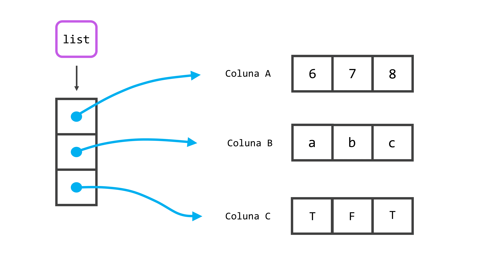

data_aniversario <- "20 de maio"
### Quando eu chamo pelo nome deste objeto
### no console, o R me retorna o que tem dentro dele.
data_aniversario[1] "20 de maio"Nas próximas seções vou abordar os fundamentos da linguagem: os básicos de sua sintaxe, quais são as estruturas e tipos de dados que a linguagem oferece, e como as suas regras de coercion funcionam.
Na maior parte do tempo, você não vai estar interessado em como o R está estruturando ou interpretando os seus dados. Porém, várias das funções ou ações que você deseja aplicar, exigem que os seus dados estejam estruturados em um formato específica. Logo, ter familiaridade com os fundamentos do R, com as suas estruturas e suas propriedades, e principalmente, poder reconhecê-las, vai te salvar muito tempo. Com esse conhecimento, será mais fácil de você evitar erros, e será mais fácil de identificar e transformar a estrutura de seus dados para qualquer que seja a sua necessidade em um dado momento de sua análise.
Uma das principais características do R é que ele é uma linguagem orientada a objetos (object oriented). Isto significa, que quando você estiver trabalhando com seus dados no R, você estará constantemente aplicando operações e transformações sobre os objetos onde seus dados estão guardados.
Um objeto no R é como uma caixa que você utiliza na sua mudança de casa. Você guarda algo dentro dessa caixa, e escreve na lateral um nome (ou um “rótulo”) para essa caixa, para que você se lembre do que está dentro dela. No dia seguinte à mudança, quando você precisar do conteúdo que está guardado naquela caixa, você procura essa caixa pelo nome que você deu a ela.
No exemplo abaixo, eu estou criando um objeto. Dou o nome de data_aniversario para este objeto, e estou utilizando o símbolo <- para definir o valor deste objeto. Agora, este objeto guarda a data de aniversário de um amigo importante (20 de maio). O símbolo <- é comumente chamado de assignment, e significa que estamos atribuindo um valor a um objeto (no caso abaixo, data_aniversario). Em outras palavras, os comandos abaixo, podem ser lidos como: eu atribuo ao objeto de nome data_aniversario, o valor de "20 de maio". Após isso, sempre que eu chamar por esse nome, o R irá procurar por uma caixa (ou um objeto) que possui o nome de data_aniversario. Quando ele encontrar essa caixa, ele irá me retornar no console o que tem dentro dessa caixa (ou desse objeto).
data_aniversario <- "20 de maio"
### Quando eu chamo pelo nome deste objeto
### no console, o R me retorna o que tem dentro dele.
data_aniversario[1] "20 de maio"Este conceito de “objeto” é simplesmente uma metáfora, ou uma forma útil de enxergarmos este sistema. Pois para o R, o nome data_aniversario se trata apenas uma conexão até o valor ("20 de maio"). Para demonstrarmos essa ideia, vamos utilizar os endereços desses objetos. Isto é, todos os valores contidos nos objetos que você cria em sua sessão do R, vão obrigatoriamente ocupar um espaço, ou um endereço da memória RAM de seu computador. Enquanto este objeto estiver “vivo”, ou seja, enquanto esta conexão entre o nome x e os seus valores permanecer acessível em sua sessão, esses valores vão estar ocupando um endereço específico de sua memória RAM. Para descobrirmos esse endereço, nós podemos utilizar a função ref() do pacote lobstr. Vamos supor por exemplo, que nós criamos um vetor chamado x, que contém três números. Perceba abaixo pelo resultado da função ref(), que ao criar este objeto x, os seus valores foram alocados no endereço 0x1ca169c03d8 da minha memória RAM.
library(lobstr)
x <- c(6, 7, 8)
ref(x)## [1:0x1ca169c03d8] <dbl> Portanto, um objeto no R, nada mais é do que uma conexão entre um nome e valores que estão guardados em um endereço específico da memória RAM de seu computador. Os únicos momentos em que este endereço muda são: 1) todas as vezes em que você reiniciar a sua sessão no R; 2) ou todas as vezes em que você executar novamente os códigos necessários para criar os seus objetos. Tendo isso em mente, um objeto no R pode ser representado pela Figura 2.1.
Para desenvolvermos essa ideia, pense o que ocorreria, se atribuíssemos os valores do objeto x, a um novo objeto. Segundo essa perspectiva, nós estaríamos apenas conectando o vetor com os valores 6, 7 e 8, a um novo nome, no exemplo abaixo, ao nome y. Nós poderíamos utilizar novamente a função ref() para conferirmos o endereço onde os valores do objeto y, se encontram, e perceba que eles estão no mesmo local que os valores do objeto x.
y <- x
ref(y)## [1:0x1ca169c03d8] <dbl> Logo, se atualizarmos a nossa representação visual, temos o seguinte resultado:
Em outras palavras, o R em nenhum momento criou uma cópia do vetor contendo os valores 6, 7 e 8, e alocou essa cópia no objeto y. Ele apenas conectou um novo nome (y) a esse vetor de valores. Por isso, quando você possui um objeto, e atribui um novo valor a este objeto, você está na verdade eliminando a conexão que o nome deste objeto possuía com o valor que estava guardado anteriormente naquele objeto. Ou seja, se você retornar ao vetor x, e definir um novo valor para ele, você estaria eliminando a sua conexão com o vetor que contém os números 6, 7 e 8, e atribuindo essa conexão a um outro conjunto de valores. Por exemplo, caso eu executasse o comando x <- "Hello World", o resultado seria uma nova conexão como você pode ver pela Figura 2.3.
O R vai automaticamente eliminar qualquer valor que não esteja conectado a um nome (isto é, um objeto em sua sessão). Logo, tendo em mente a Figura 2.3, caso eu atribuísse um novo valor ao objeto y, a última conexão existente até o vetor que contém os números 6, 7 e 8, seria eliminada. Com isso, este vetor não possuiria mais nenhuma conexão até um nome e, por isso, esses valores seriam descartados pelo R. Portanto, se você precisa atribuir um novo valor para um determinado objeto, mas deseja manter o valor que você deu a ele anteriormente vivo de alguma forma, basta que você crie uma nova conexão até esse valor. Em outras palavras, se você quer manter este valor vivo, basta conectá-lo a um novo objeto.
No exemplo abaixo, eu crio um objeto (economista_1) contendo o nome de um economista famoso, e em seguida conecto este nome a um novo objeto (economista_anterior). Portanto, o nome de Keynes está agora conectado a dois nomes (isto é, ele está contido em dois objetos diferentes em sua sessão no R). Por último, eu sobreponho o nome de Keynes que guardei no primeiro objeto (economista_1), pelo nome de outro economista famoso. Quando faço isso, estou efetivamente eliminando uma das conexões até o nome de Keynes, e atribuindo essa conexão ao nome de Schumpeter. Porém, como o nome de Keynes ainda possui uma conexão existente (economista_anterior), o nome continua “vivo” e presente em nossa sessão, e se quisermos acessar novamente esse nome, basta chamarmos pelo objeto onde o salvamos.
# Primeiro valor
economista_1 <- "John Maynard Keynes"
# Atribuindo o primeiro valor a um novo
# objeto
economista_anterior <- economista_1
# Sobrepondo o primeiro valor no
# primeiro objeto com um novo nome
economista_1 <- "Joseph Alois Schumpeter"
economista_1[1] "Joseph Alois Schumpeter"economista_anterior[1] "John Maynard Keynes"Aqui temos duas questões distintas, mas que estão interconectadas. A primeira, se refere a como o R organiza os seus dados. Já a segunda questão, se refere a como o R interpreta os seus dados. A primeira questão fala das diferentes formas que o R possui para estruturar e organizar os seus dados. Essas formas são chamadas de estruturas de dados. A Figura 2.4 apresenta essa questão de forma visual.
Já a segunda questão, fala dos diferentes tipos de dados que o R pode trabalhar com. Ou seja, todo objeto existente no R é interpretado de uma determinada maneira. É como se o R atribuísse uma cor para cada objeto: “Ah este objeto é vermelho! Opa, este objeto parece ser azul! E esse? Será que é verde? Não, acho que ele é amarelo mesmo”. Para todo objeto existente, o R atribui um tipo de dado específico a ele. Tudo depende do tipo de dado que está armazenado dentro deste objeto. A Figura 2.5 apresenta essa questão de forma visual.
Tanto a estrutura de dados que está sendo utilizada em um objeto, quanto o tipo de dado atribuído a ele, são partes de extrema importância no R. Pois cada função no R pode esperar como input, um objeto que esteja em um tipo ou estrutura de dados específicos. Além disso, em alguns casos, o R pode aplicar diferentes “versões” de uma mesma função sobre o seu objeto, a depender do tipo de dado associado a ele.
Portanto, estamos nos perguntando qual o tipo de dado que o R está associando a um certo conjunto de valores, e em muitas ocasiões, podemos nos surpreender com as escolhas da linguagem. Tal surpresa está representada na Figura 2.5. Por exemplo, quando eu vejo o valor "20/05/2020", eu rapidamente o associo ele à data 20 de maio de 2020, mas será que o R compreende que este valor se trata de uma data? A resposta curta é, não.
Pelo fato das datas não estarem entre os tipos de dados básicos do R, enquanto não dissermos explicitamente para o R que se tratam de datas, valores como "20/05/2020" são tratados inicialmente como simples textos (isto é, valores do tipo character). Isso é um ponto importante, pois várias funções ou ações que queremos executar no R, exigem que os seus dados estejam no tipo adequado. Por isso, você vai enfrentar diversas situações onde o console lhe retorna um erro confuso, e depois de alguns minutos analisando os seus comandos e conferindo a estrutura de seus dados, você se supreende, e descobre que o R estava o tempo todo interpretando os seus números como textos!
Inicialmente, vamos descrever nas próximas seções as estruturas de dados presentes na linguagem. Em seguida, partimos para os tipos de dados básicos do R. Nessas seções, não vamos incluir uma estrutura do R em específico, que é o array. Nós veremos mais a frente, as matrizes (matrix), que no fundo são um caso especial de array. Enquanto matrizes são vetores com duas dimensões (uma dimensão para as linhas e outra para as colunas), os array são vetores com “n” dimensões. Em outras palavras, com um array você pode criar um objeto tridimensional (3 dimensões), ou se quiser ir longe, um objeto com 4, 5, ou infinitas dimensões.
Os vetores são a estrutura básica da linguagem R, pois todas as outras estruturas, são construídas a partir desses vetores. Um vetor é simplesmente uma sequência de valores. Valores que podem ser datas, números, textos, índices, ou qualquer outro tipo que você imaginar. Pelo fato de ser uma simples sequência de valores, o vetor é uma estrutura unidimensional. É como se esse vetor fosse composto por apenas uma coluna, que você preenche com quantas linhas você precisar. Ou então, você também pode imaginá-lo como uma corda, que amarra e mantém os seus valores conectados um atrás do outro.
A forma mais simples de se criar um vetor, é através da função c() (abreviação para combine, ou combinar), em que você fornece os valores que quer incluir neste vetor, separando-os por vírgulas. A outra forma (indireta) de se criar um vetor, é através de funções que retornam por padrão este tipo de estrutura. Um exemplo simples, é a função : que serve para criar sequências numéricas no R, no exemplo abaixo, uso essa função para criar uma sequência de 1 a 10. Outro exemplo, seria a função rep() que serve para repetir um conjunto de valores, por quantas vezes você quiser.
c(48, 24, 12, 6)[1] 48 24 12 6c("a", "b", "c", "d")[1] "a" "b" "c" "d"1:10 [1] 1 2 3 4 5 6 7 8 9 10rep(c("Ana", "Eduardo"), times = 5) [1] "Ana" "Eduardo" "Ana" "Eduardo" "Ana" "Eduardo" "Ana"
[8] "Eduardo" "Ana" "Eduardo"Como o vetor é uma estrutura unidimensional, eu posso acessar um único valor dentro desse vetor, utilizando apenas um índice. Por exemplo, se eu quero extrair o quarto valor dessa sequência, eu utilizo o número 4, se eu quero o terceiro valor, o número 3, e assim por diante. Para acessar “partes”, ou um único valor de uma estrutura no R, nós utilizamos a função [, e para utilizá-la, basta abrir colchetes após o nome do objeto onde você salvou este vetor, ou após a função que está gerando este vetor.
vetor <- 1:10
vetor[4][1] 4c("a", "b", "c")[3][1] "c"Para acessar mais de um valor dentro deste vetor, você terá que fornecer um novo vetor de índices à função [. Um jeito prático de criar este novo vetor de índices, é criando uma sequência com a função : que vimos anteriormente. Um detalhe, é que o R irá extrair os valores na ordem em que você os dá a [. Logo, se eu dentro de [ incluir o vetor c(2,4,6,1), o R irá lhe retornar um novo vetor, que contém o segundo, quarto, sexto e primeiro item do vetor anterior, respectivamente. Caso você repita algum índice, o R irá repetir o valor dentro do vetor resultante, e não te avisará sobre isso.
vetor <- 1:25
vetor[1:4][1] 1 2 3 4vetor[8:13][1] 8 9 10 11 12 13vetor[c(2,4,4,1)][1] 2 4 4 1Os vetores que estamos criando com essas funções são comumente chamados de vetores atômicos (atomic vector). Esses vetores possuem uma propriedade simples e importante: vetores atômicos possuem apenas um único tipo de dado dentro deles. Você não consegue guardar dentro de um mesmo vetor, valores de dois tipos de dados diferentes (por exemplo, textos e números) sem que alguma transformação ocorra. Caso você tente burlar essa regra, o R irá automaticamente converter os valores para um único tipo de dado, e pode ser que parte desses dados não possam ser convertidos de forma lógica para este único tipo, e acabam sendo “perdidos” neste processo. Falaremos mais sobre esse processo de conversão, quando chegarmos em tipos de dados.
Matrizes nada mais são do que vetores com duas dimensões. Se você possui dados atualmente alocados em um vetor, e deseja organizá-los em colunas e linhas, você pode rapidamente criar uma matriz com este vetor, ao adicionar dimensões a ele, através da função dim(). Você usa a função sobre o vetor desejado à esquerda do símbolo de assignment (<-), e atribui um valor ao resultado dessa função. No caso de matrizes, esse valor será um vetor com dois elementos, o primeiro definindo o número de linhas, e o segundo, o número de colunas.
vetor <- 1:6
dim(vetor) <- c(3,2)
vetor [,1] [,2]
[1,] 1 4
[2,] 2 5
[3,] 3 6Uma outra forma de criar uma matriz, é através da função matrix(). Você primeiro fornece um vetor à função, e define quantas colunas você deseja em ncol, e quantas linhas em nrow. Um detalhe que fica claro no exemplo abaixo, é que ao criar uma matriz, ela por padrão será preenchida por coluna, e não por linha. Caso você queira que ela seja preenchida por linha, você deve adicionar o valor TRUE, ao argumento byrow na função.
# Para preencher a matriz, por linha, adicione
# byrow = TRUE à função
matrix(1:20, nrow = 5, ncol = 4) [,1] [,2] [,3] [,4]
[1,] 1 6 11 16
[2,] 2 7 12 17
[3,] 3 8 13 18
[4,] 4 9 14 19
[5,] 5 10 15 20Os vetores são estruturas unidimensionais, e com apenas um índice poderíamos acessar um valor contido nele. Porém, as matrizes possuem duas dimensões, logo, temos que fornecer dois índices à função [ para acessarmos um único elemento dessa matriz. Basta você separar esses dois índices por uma vírgula, onde o primeiro valor corresponde a linha, e o segundo, a coluna desejada. No exemplo abaixo, estou extraindo o elemento que se encontra na terceira linha da quarta coluna.
matriz <- matrix(1:20, nrow = 5, ncol = 4)
matriz[3,4][1] 18Eu posso também extrair uma parte dessa matriz, ao fornecer mais valores dentro de um vetor, para cada um dos dois índices. No primeiro exemplo abaixo, eu extraio todos os valores da primeira a terceira linha da segunda coluna da matriz. Agora, caso eu queira extrair todos os valores de uma dimensão (todas as linhas, ou todas as colunas), basta que eu deixe em “branco” ao lado de cada índice. No segundo exemplo abaixo, estou extraindo todos os valores da segunda coluna.
matriz[1:3, 2] # É o mesmo que: matriz[c(1,2,3), 2][1] 6 7 8matriz[ , 2][1] 6 7 8 9 10Pelo fato de matrizes serem vetores com duas dimensões, elas herdam a propriedade do vetor, e, portanto: matrizes podem conter dados de apenas um único tipo. Por essa característica, você provavelmente utilizará essa estrutura poucas vezes. De qualquer forma é útil conhecê-la.
A lista é uma estrutura especial e muito importante do R, pois ela é a exceção da propriedade dos vetores (que podem conter apenas um tipo de dado). Portanto, uma lista é um vetor, onde cada elemento deste vetor pode ser não apenas de um tipo de dado diferente, mas também de tamanho e estrutura diferentes. Dito de outra forma, você pode incluir o que você quiser em cada elemento de uma lista.
Uma lista é criada pela função list(), e para utilizá-la, basta fornecer os valores que deseja inserir em cada elemento desta lista, separados por vírgulas. No exemplo abaixo, estou inserindo no primeiro elemento desta lista a data que vimos anteriormente (“20/05/2020”), no segundo, estou incluindo uma matriz, no terceiro, um vetor com nomes, e no quarto, um data.frame (falaremos sobre eles após essa seção).
# Lista nomeada
# nome = valor
lista <- list(
data = "20/05/2020",
matriz = matrix(1:20, ncol = 4, nrow = 5),
vetor = c("Belo Horizonte", "Londrina", "Macapá"),
tabela = data.frame(x = 21:30, y = rnorm(10))
)
lista$data
[1] "20/05/2020"
$matriz
[,1] [,2] [,3] [,4]
[1,] 1 6 11 16
[2,] 2 7 12 17
[3,] 3 8 13 18
[4,] 4 9 14 19
[5,] 5 10 15 20
$vetor
[1] "Belo Horizonte" "Londrina" "Macapá"
$tabela
x y
1 21 2.08749847
2 22 0.89801652
3 23 0.52684742
4 24 0.05447599
5 25 -0.68582890
6 26 -0.65862147
7 27 -0.53714919
8 28 0.37764936
9 29 -1.28045042
10 30 0.58714905Perceba que nós nomeamos cada elemento dessa lista. Isso abre novas possibilidades, pois agora podemos utilizar um sistema diferente da função [ para acessarmos os valores específicos de uma lista, utilizando o operador $. Através deste operador, podemos acessar os elementos dessa lista, através do nome que demos para cada um deles. O problema deste sistema, é que ele lhe permite acessar todos os valores contidos em um elemento de sua lista, mas não lhe permite extrair valores específicos contidos em cada um destes elementos da lista.
lista$matriz [,1] [,2] [,3] [,4]
[1,] 1 6 11 16
[2,] 2 7 12 17
[3,] 3 8 13 18
[4,] 4 9 14 19
[5,] 5 10 15 20lista$vetor[1] "Belo Horizonte" "Londrina" "Macapá" Você não precisa nomear cada um dos elementos dessa lista como fizemos acima. Eu nomeie apenas para dar um exemplo do operador $. Porém, neste caso em que você não atribui um nome a esses elementos, você não pode acessá-los mais pelo operador $, e terá que retornar à funçaõ [ para tal serviço. Em outras palavras, se você deseja criar uma lista, mas não está muito preocupado em nomear cada um dos elementos que vão estar nessa lista, basta separar esses valores por vírgulas como no exemplo abaixo:
lista <- list(
c(6, 7, 8),
c("a", "b", "c"),
c(T, F, T)
)
lista[[1]]
[1] 6 7 8
[[2]]
[1] "a" "b" "c"
[[3]]
[1] TRUE FALSE TRUEAntes de prosseguirmos, darei uma nova descrição (dessa vez, uma descrição visual) de uma lista, para que você fixe na sua cabeça o que ela é. Eu espero que eu tenha desejado bem o suficiente, para que você seja capaz de identificar um trem carregando quatro vagões na Figura 2.6. Podemos pensar esse trem como uma lista, e os seus vagões como os elementos dessa lista. Tendo isso em mente, temos na Figura 2.6 uma representação de uma lista com quatro elementos.
Como disse anteriormente, podemos incluir o que quisermos dentro de cada elemento dessa lista, ou dentro de cada vagão desse trem. Pois cada vagão é capaz de comportar elementos de qualquer dimensão e em qualquer estrutura, e como esses vagões estão separados uns dos outros, esses elementos não precisam compartilhar das mesmas características. Dito de outra forma, eu posso carregar 15 toneladas de ouro no primeiro vagão, 100 Kg de carvão no segundo vagão, e 1 Kg de ferro no terceiro vagão.
Portanto, a lista é uma estrutura que lhe permite transportar todos esses diferentes elementos, em um mesmo objeto no R (ou todos esses diferentes componentes em um mesmo trem). Quando chegarmos em interação, você verá que essa característica torna a lista, uma estrutura extremamente útil.
Agora como eu posso extrair valores dessa lista através da função [ ? Bem, a lista é a exceção da propriedade dos vetores, mas ela continua sendo um vetor em sua essência, ou uma estrutura unidimensional. Por isso, você pode acessar um item de uma lista com apenas um índice dentro de [.
Porém, caso você usar apenas um colchete para selecionar o primeiro elemento de sua lista, você percebe que uma pequena descrição ("[[1]]"), ou o nome que você deu aquele elemento, aparece em cima dos valores contidos neste elemento da lista. Por isso, se você deseja extrair apenas os valores desse elemento, sem essa descrição, você deve utilizar o índice dentro de dois colchetes.
lista <- list(
1:20,
"O ano tem 365 dias",
matrix(1:20, ncol = 4, nrow = 5)
)
lista[1][[1]]
[1] 1 2 3 4 5 6 7 8 9 10 11 12 13 14 15 16 17 18 19 20lista[[1]] [1] 1 2 3 4 5 6 7 8 9 10 11 12 13 14 15 16 17 18 19 20lista[[2]][1] "O ano tem 365 dias"lista[[3]] [,1] [,2] [,3] [,4]
[1,] 1 6 11 16
[2,] 2 7 12 17
[3,] 3 8 13 18
[4,] 4 9 14 19
[5,] 5 10 15 20Isso ocorre, porque quando você utiliza apenas um colchete para selecionar o primeiro elemento, o R acaba lhe retornando uma nova lista contendo um elemento, e não apenas o que está dentro deste elemento em si. Dizendo em termos da representação visual que utilizamos na Figura 2.6, se eu possuo um trem com quatro vagões, e utilizo um colchete para selecionar o primeiro vagão, o R me retorna um novo trem que contém o primeiro vagão. Mas se eu utilizo dois colchetes, o R me retorna apenas o primeiro vagão, e nada mais.
Mas como eu faço para extrair um valor específico de um elemento de uma lista? Para isso você deve abrir um novo colchete após os colchetes duplos que você criou para selecionar o elemento da lista (como mostrado na Figura 2.7). A partir daí, basta replicar o que vimos anteriormente com os índices. No exemplo abaixo, estou primeiro selecionando o terceiro elemento da nossa lista (que é uma matriz). Em seguida, eu seleciono o item da terceira linha da primeira coluna desta matriz.
lista[[3]][3,1][1] 3data.frameO data.frame é a principal estrutura utilizada para guardar tabelas e bases de dados no R (esta estrutura é semelhante ao DataFrame no framework pandas do Python). Na grande maioria das vezes que você importar os seus dados para o R, eles serão alocados dentro de um data.frame. Essa estrutura é no fundo, uma lista com algumas propriedades a mais. Por isso, o data.frame herda uma das propriedades da lista: cada uma das colunas da tabela formada por um data.frame, pode conter um tipo de dado diferente das demais colunas deste data.frame.
Esta é uma das principais características que tornam o data.frame, uma estrutura adequada para guardar a grande maioria das bases de dados. Pois é muito comum, que você possua em sua base, diversas colunas contendo dados de diferentes tipos. Por exemplo, você pode ter uma base que possui uma coluna contendo datas, outras duas contendo valores numéricos, e uma última coluna contendo textos, ou rótulos indicando a qual indicador ou grupo, os valores numéricos da linha se referem. E ao importar uma base como essa para o R, é de seu desejo que o R interprete essas colunas corretamente e mantenha os tipos desses dados intactos.
Os data.frame’s são criados pela função data.frame(). Você deve preencher essa função com os valores que você deseja alocar em cada coluna separados por vírgulas. Você pode escolher não dar um nome a cada coluna, neste caso a função se ocupará de dar um nome genérico para elas. Caso opte por definir esses nomes, você deve fornecê-los antes dos valores da coluna, seguindo a seguinte estrutura:
# Estrutura Básica:
# data.frame(
# <nome_coluna> = <valor_coluna>
# )
data.frame(
nomes = rep(c("Ana", "Eduardo"), times = 5),
numeros = rnorm(10),
constante = 25
) nomes numeros constante
1 Ana -1.57576271 25
2 Eduardo -1.10535066 25
3 Ana -0.85332690 25
4 Eduardo -0.44557751 25
5 Ana 0.20310147 25
6 Eduardo 0.34410449 25
7 Ana 0.04130259 25
8 Eduardo -0.08708728 25
9 Ana -1.45232309 25
10 Eduardo -1.18069340 25Caso você esteja em dúvida, tudo o que a função rnorm() faz é gerar valores aleatórios seguindo uma distribuição normal. Vemos que no exemplo acima, geramos uma tabela com 3 colunas e 10 linhas, e aqui chego a segunda principal propriedade de um data.frame, que é: todas as colunas de um data.frame devem possuir o mesmo número de linhas. O motivo dessa propriedade é um pouco óbvio, pois se estamos tentando formar uma tabela de dados, é natural pensarmos que ela deve formar um retângulo uniforme.
Isso significa, que se eu pedisse para a função rep() repetir os valores 6 vezes (ao invés de 5), gerando assim um vetor de 12 elementos (ou 12 linhas), a função data.frame() me retornaria um erro, indicando que o número de linhas criadas pelos diferentes vetores não possuem o mesmo número de linhas.
Caso não tivéssemos essa propriedade, estaríamos permitindo que alguma dessas colunas deste data.frame, fosse mais longa do que as outras. Neste caso, como você lidaria com as observações “sobressalentes” da tabela ? Você possui um valor na coluna x que não possui um valor correspondente na coluna y, será que você considera o valor da coluna y como vazio ? Não disponível ? Não existente ? Enfim, uma confusão que é desnecessária.
Essa propriedade nos garante que para cada observação (ou linha) da nossa tabela, deve sempre existir um valor na coluna y correspondente ao valor da coluna x, mesmo que o valor da coluna y seja um valor NA (não disponível), ou algo indicando que não foi possível coletar esse valor no plano físico de nossa atividade.

data.frame a partir de uma listaAo voltar para o exemplo acima, você pode perceber que na terceira coluna que definimos em data.frame(), demos uma simples constante (25) à função. Como resultado, a função acaba preenchendo toda a coluna por essa constante. Isso ocorre sempre que você fornece um único valor a uma coluna de seu data.frame, seja este valor, uma data, um texto, um número ou qualquer outro tipo que imaginar.
A partir daqui, é interessante criarmos um modelo visual em nossa cabeça, sobre o que um data.frame representa. Como disse anteriormente, um data.frame, é basicamente uma lista, com algumas propriedades a mais, em especial a propriedade de que todos os seus elementos devem possuir o mesmo número de linhas. Portanto, se você quer imaginar um data.frame em sua mente, você pode imaginar uma lista, onde cada um de seus elementos, representa uma coluna desse data.frame. Em conjunto, essas colunas (ou os elementos dessa lista) formam uma tabela, sendo essa tabela, comumente referida como um data.frame.
Vale destacar um outro comportamento da função data.frame(). Ela transforma por padrão, todos os textos em fatores (factor), ou em outras palavras, valores de uma variável categórica que possui um conjunto limitado de valores possíveis. Vamos aprender mais sobre este tipo de dados nas próximas seções. Inicialmente, isso não tem grandes implicações sobre os seus dados. Eles vão continuar sendo apresentados como textos, e a única grande mudança será sobre a forma como o R irá ordenar esses valores caso você peça isso a ele. Mas é importante saber deste detalhe, pois você vai querer suprimir esse comportamento na maioria das vezes. Para isso, basta adicionar o valor FALSE para o argumento stringsAsFactors.
tabela <- data.frame(
cidade = rep(c("Belo Horizonte", "Londrina", "Macapá"), times = 4),
valor = rnorm(12),
stringsAsFactors = FALSE
)
# Estou utilizando a função is.character()
# para confirmar que data.frame() manteve
# a coluna de cidades como texto (characters)
is.character(tabela$cidade)[1] TRUENo exemplo acima, você também percebe que eu utilizei dentro da função is.character(), o operador $ para acessar os valores da coluna cidade da nossa tabela. Em data.frame’s você sempre pode utilizar este mecanismo para acessar os valores de uma das colunas de sua tabela, pois data.frame() irá sempre se preocupar em nomear as colunas caso você não o faça. Portanto, mesmo que data.frame() invente um nome completamente esquisito para as suas colunas, elas sempre terão um nome para o qual você pode se referir com $.
Isso não significa que você deixará de utilizar o sistema [, pois essa função é muito mais flexível do que você imagina. Uma de suas principais e mais poderosas ferramentas, é um sistema que é comumente chamado de logical subsetting. Com ele, podemos usar a função [ para extrair valores de um objeto, de acordo com o resultado de testes lógicos. Em diversas funções de pacotes que você utilizar, se você visitar o código fonte dessas funções, você irá encontrar este sistema sendo utilizado em algum momento, sendo portanto, uma ferramenta extremamente útil dentro do R.
Em resumo, se você quer extrair todos os valores de uma coluna de seu data.frame, você pode utilizar o sistema $, ou o mesmo sistema que utilizamos em matrizes, ao deixar o índice das linhas em “branco” dentro de [. Se você quer extrair partes específicas de sua tabela, você terá que usar [ da mesma forma que o utilizamos em matrizes. Como as colunas de um data.frame são nomeados, você pode também extrair uma coluna inteira, ao colocar o nome dessa coluna entre aspas dentro dos colchetes. Todos os sistemas utilizados abaixo, nos retorna todos os valores da coluna cidade.
tabela$cidade
tabela[, 1]
tabela[["cidade"]]Você deve ter percebido acima que utilizei novamente os dois colchetes, ao me referir dentro deles pelo nome da coluna desejada. Este sistema funciona exatamente da mesma forma que ele funciona em listas. Se eu utilizar um colchete, o R me retorna um data.frame contendo uma única coluna (neste caso, a coluna cidade), se eu uso dois colchetes, o R me retorna um vetor contendo apenas os valores dessa coluna.
Agora, voltando um pouco em nossa descrição, quando eu disse que um data.frame são listas, pois herdava muitas de suas propriedades, eu acabei omitindo uma dessas propriedades para evitar confusões. Você deve ter percebido pelos exemplos anteriores, que cada elemento de um data.frame é uma coluna de sua tabela. Você talvez tenha percebido também que todos esses elementos nos exemplos anteriores, eram vetores. Isso é uma característica marcante de um data.frame, pois na maioria das vezes em que você ver um, ele estará servindo apenas como um laço, que amarra e mantém diferentes vetores unidos em uma mesma estrutura, vetores esses que juntos formam uma tabela.
Você deve estar pensando: “Mas é claro que cada coluna é um vetor! Não faria sentido se eu incluísse matrizes ou outras tabelas em uma coluna de uma tabela! Um vetor é a estrutura que faz mais sentido para essas colunas!”. Bom, eu creio que agora é uma boa hora para “explodir” a sua cabeça!…ou pelo menos metaforicamente falando. A outra propriedade que data.frame’s herdam de listas, é que cada um de seus elementos também não precisam ser da mesma estrutura.
Essa propriedade significa que eu posso incluir sim, uma matriz, ou um outro data.frame, como uma nova coluna de um data.frame que está salvo em algum objeto. Lembre-se que a principal diferença entre um data.frame e uma lista, é que os elementos de um data.frame precisam obrigatoriamente ter o mesmo número de linhas. No exemplo abaixo, eu estou criando inicialmente um data.frame com 10 linhas e 2 colunas, logo, se eu quiser incluir uma nova tabela como uma nova coluna desse data.frame, essa nova tabela (ou novo data.frame) deve possuir 10 linhas (mas esse novo data.frame pode ter quantas colunas você desejar).
Você pode facilmente adicionar uma nova coluna a um data.frame, utilizando o operador $. Você escreve primeiro o nome do objeto onde o seu data.frame está contido, abre o cifrão ($), e em seguida, coloca um nome de uma coluna que não existe em seu data.frame até aquele momento. Se não há alguma coluna neste data.frame que possui este nome, o R irá adicionar esta coluna a ele, e para você preencher essa coluna com algum valor, basta utilizar o símbolo de assignment (<-), como se você estivesse salvando algum valor em um novo objeto. Após criar essa nova coluna, eu chamo por ela, para que o R me mostre o que tem nessa coluna, e como esperávamos, ele me retorna o novo data.frame que criamos.
tabela <- data.frame(
cidade = rep(c("Belo Horizonte", "Londrina"), times = 5),
valor = rnorm(10)
)
tabela$novo_dataframe <- data.frame(
x = rep("Ana", times = 10),
y = rep("Eduardo", times = 10),
z = 25
)
tabela$novo_dataframe x y z
1 Ana Eduardo 25
2 Ana Eduardo 25
3 Ana Eduardo 25
4 Ana Eduardo 25
5 Ana Eduardo 25
6 Ana Eduardo 25
7 Ana Eduardo 25
8 Ana Eduardo 25
9 Ana Eduardo 25
10 Ana Eduardo 25Na Figura 2.8, estou utilizando a função str() sobre o objeto tabela. Essa função nos retorna no console, uma descrição da estrutura de um objeto. No retângulo vermelho, temos a estrutura geral do objeto, vemos que o objeto tabela é um data.frame com dez linhas e três colunas. Os nomes de suas três colunas estão especificadas no retângulo verde. A direita do nome da terceira coluna (chamada novo_dataframe), podemos ver uma descrição de sua estrutura marcada por um retângulo azul. Vemos neste retângulo azul, portanto, a estrutura desta terceira coluna, e podemos confirmar que se trata também de um data.frame com 10 linhas e 3 colunas, e no retângulo roxo, podemos ver o nome das três colunas (no caso abaixo, colunas x, y e z) contidas neste segundo data.frame. Os falantes de língua inglesa costumam se referir a esta situação onde inserimos uma nova estrutura dentro de uma mesma estrutura, como uma nested structure, ou uma estrutura “aninhada”. Logo, o exemplo que estou dando, se trata de um nested data.frame. Pois estamos inserindo um data.frame, dentro de um outro data.frame.
data.frame aninhado
Se você chamar pelo nome tabela no console, para ver o que tem dentro deste objeto, o console irá lhe mostrar um data.frame com 10 linhas e 5 colunas. Pois ele lhe apresenta tanto as 2 colunas definidas como vetores em tabela, quanto as 3 colunas definidas em tabela$novo_dataframe, tudo em uma mesma tabela. Entretanto, como vimos através da função str(), o R está considerando este objeto como um data.frame com 10 linhas e 3 colunas, onde a terceira coluna contém um novo data.frame de 10 linhas e com outras 3 colunas, e não como um único data.frame com 10 linhas e 5 colunas.
Tendo essas considerações em mente, você pode sim incluir dados que estão em qualquer uma das estruturas anteriormente mencionadas, dentro de uma coluna (ou elemento) de um data.frame. Essa propriedade é mais citada nos manuais originais da linguagem (veja TEAM, 2020a, 2020b), enquanto é muito pouco mencionada, ou pouco explicada em detalhes em outros livros-texto sobre a linguagem. Pois é uma propriedade que faz pouco sentido, considerando-se as principais aplicações de um data.frame. Porém, com essa propriedade, você pode pensar facilmente em uma outra estrutura que é muito mais útil e muito mais poderosa, para ser incluída em uma nova coluna de seu data.frame. Essa estrutura, é uma lista!
Pense um pouco sobre isso. Uma lista é um vetor em sua essência, e por isso, pode facilmente formar uma nova coluna desse data.frame. A vantagem de se incluir uma lista, é que agora em cada célula (ou em cada linha) dessa nova coluna, eu posso guardar um dado de um tipo, tamanho e estrutura diferentes. Se fossemos utilizar a representação visual da seção anterior, é como se a coluna de seu data.frame tenha se transformado em um trem, e agora cada célula, ou cada linha dessa coluna, tenha se tornado um vagão deste trem. Com essa realidade, você pode por exemplo, facilmente aplicar um modelo de regressão sobre 1.000 bases de dados diferentes, e ainda guardar os resultados em cada linha de uma nova coluna, tudo isso com apenas um comando! Dessa forma, você terá em uma coluna de seu data.frame contendo uma lista, lista essa que está mantendo todos esses 1.000 data.frame’s diferentes juntos.
Se você consegue entender a língua inglesa, mesmo que sutilmente, eu altamente recomendo que assista a palestra de Hadley Wickham, entitulada “Managing many models with R”, que está disponível no YouTube1. Nesta palestra, ele dá um exemplo prático de como você pode implementar essa ideia, ao aplicar um modelo de regressão sobre várias bases diferentes, utilizando essa propriedade em um data.frame.
tibble’s como uma alternativa moderna aos data.frame’sUm tibble nada mais é do que uma “versão moderna” de um data.frame. Essa estrutura de dado é originária do pacote tibble, logo, se você deseja utilizá-la em algum de seus dados, você terá que chamar obrigatoriamente por esse pacote com o comando library()2. Lembre-se que o pacote deve estar instalado em sua máquina, para que você seja capaz de chamar por ele com o comando library().
Portanto, essa estrutura foi criada com o intuito de melhorar alguns comportamentos do data.frame, que eram adequados para a sua época, mas que hoje, são desnecessários e que podem gerar um pouco de dor de cabeça. Tais estruturas podem ser criadas do zero, através da função tibble(), que funciona da mesma maneira que data.frame(). Você dá o nome para cada coluna, e após um igual (=) você define o que irá preencher cada uma dessas colunas.
library(tibble)
tab_tibble <- tibble(
Datas = seq.Date(as.Date("2020-12-01"), as.Date("2020-12-10"), by = 1),
Usuario = sample(c("Ana", "Eduardo"), size = 10, replace = T),
Valor = sample(c(2000, 3000, 4000, 5000), size = 10, replace = T)
)
tab_tibble# A tibble: 10 × 3
Datas Usuario Valor
<date> <chr> <dbl>
1 2020-12-01 Ana 3000
2 2020-12-02 Eduardo 5000
3 2020-12-03 Eduardo 3000
4 2020-12-04 Eduardo 3000
5 2020-12-05 Eduardo 4000
# ℹ 5 more rowsPor outro lado, se você já possui um data.frame e deseja convertê-lo para um tibble, você precisa apenas aplicar a função as_tibble() sobre ele.
tabela <- as_tibble(tabela)A primeira melhoria dessas estruturas, se encontra no método de print(), ou em outras palavras, na forma como o R lhe mostra a sua tabela no console. Quando chamamos por um objeto que é um data.frame, o console acaba lhe retornando muito mais linhas do que o necessário (ele pode retornar até 1000 linhas), além de todas as colunas da tabela. Se o seu data.frame possui várias colunas, você pode se sentir frustrado com esse comportamento, pois se alguma coluna de sua tabela não couber ao lado das colunas anteriores, o console acaba quebrando o resultado em várias “linhas”, algo que pode tornar a leitura confusa com certa facilidade.
As origens do R são antigas (> 50 anos), e aparentemente esse não era um comportamento muito ruim na época, talvez porque as dimensões das tabelas dessa época eram muito limitadas. Porém, com as capacidades de processamento atuais, essa atitude é desnecessária ou indesejada em quase todas as situações. Veja no exemplo abaixo, onde eu pego a base flights (que possui 19 variáveis diferentes), e transformo-a em um data.frame com a função as.data.frame(). Para que o resultado não consuma muito espaço deste material, eu ainda limito o resultado às 5 primeiras linhas da tabela com head(). Perceba que a tabela foi dividida em 3 linhas diferentes de output.
library(nycflights13)
as.data.frame(flights) %>%
head(n = 5) year month day dep_time sched_dep_time dep_delay arr_time sched_arr_time
1 2013 1 1 517 515 2 830 819
2 2013 1 1 533 529 4 850 830
3 2013 1 1 542 540 2 923 850
4 2013 1 1 544 545 -1 1004 1022
5 2013 1 1 554 600 -6 812 837
arr_delay carrier flight tailnum origin dest air_time distance hour minute
1 11 UA 1545 N14228 EWR IAH 227 1400 5 15
2 20 UA 1714 N24211 LGA IAH 227 1416 5 29
3 33 AA 1141 N619AA JFK MIA 160 1089 5 40
4 -18 B6 725 N804JB JFK BQN 183 1576 5 45
5 -25 DL 461 N668DN LGA ATL 116 762 6 0
time_hour
1 2013-01-01 05:00:00
2 2013-01-01 05:00:00
3 2013-01-01 05:00:00
4 2013-01-01 05:00:00
5 2013-01-01 06:00:00Quando as suas tabelas são tibble’s, o console lhe retorna por padrão, apenas as 10 primeiras linhas da tabela (caso a tabela seja muito pequena, ele pode lhe retornar todas as linhas), o que já é o suficiente para vermos a sua estrutura. Além disso, caso as próximas colunas não caibam em uma mesma “linha”, ou ao lado das colunas anteriores, o tibble acaba omitindo essas colunas para não sobrecarregar o seu console de resultados. Lembre-se que você sempre pode ver toda a tabela, em uma janela separada através da função View().
View(flights)Veja o exemplo abaixo, onde eu chamo novamente pela base flights. O primeiro detalhe que você percebe, é a dimensão da tabela (algo que não é informado, quando chamamos por um data.frame) no canto superior esquerdo da tabela (336.776 linhas e 19 colunas). O segundo detalhe, é que o tipo de dado contido em cada coluna, está descrito logo abaixo do nome da coluna, de acordo com a abreviação deste tipo. Por exemplo, nas três primeiras colunas estão contidos números inteiros (integer’s - int), enquanto na sexta coluna (dep_delay) temos números decimais (double’s - dbl).
Mesmo que em um tibble, você fique sem a possibilidade de visualizar todas as outras colunas da tabela, que não cabem na mesma linha junto com as colunas anteriores, um tibble sempre lhe retorna logo abaixo da tabela, uma lista contendo o nome de todas as colunas restantes, além do tipo de dado contido em cada coluna, através das mesmas abreviações que vimos nas colunas anteriores.
flights# A tibble: 336,776 × 19
year month day dep_time sched_dep_time dep_delay arr_time sched_arr_time
<int> <int> <int> <int> <int> <dbl> <int> <int>
1 2013 1 1 517 515 2 830 819
2 2013 1 1 533 529 4 850 830
3 2013 1 1 542 540 2 923 850
4 2013 1 1 544 545 -1 1004 1022
5 2013 1 1 554 600 -6 812 837
# ℹ 336,771 more rows
# ℹ 11 more variables: arr_delay <dbl>, carrier <chr>, flight <int>, …Além desses pontos, tibble’s vão sempre criar destaques, ou ênfases em certos dados no console, algo que os data.frame’s não fazem em nenhum momento. Por exemplo, tibble’s vão sempre marcar de vermelho, qualquer número que seja negativo, uma funcionalidade que é bem familiar aos usuários de Excel que utilizam formatação condicional. Um outro detalhe, é que essa estrutura também marca as casas dos milhares com um pequeno sublinhado, o que facilita muito a leitura de números muito grandes.
Para mais, um comportamento muito comum de um data.frame, é converter os seus dados em textos, para fatores (factor). Este não é um comportamento de todo ruim, e nem sempre ele ocorre. Porém o principal valor dos fatores no R, está no uso de dummies em regressões e análises estatísticas, além da maneira como a ordenação de seus valores é executada. Estas características são importantes, mas também são irrelevantes para uma gama muito grande de situações. Em outras palavras, este é um comportamento desnecessário na maioria de nossas análises.
Por isso, uma outra característica que os tibble’s carregam, é que eles nunca transformam os seus dados para um outro tipo. Isso é um ponto muito importante! As funções com as quais nós trabalhamos no R, geralmente funcionam melhor com (ou são especializadas em) uma estrutura ou tipo de dado específico, e quando nós estruturamos as nossas análises sobre essas funções, nós desejamos evitar mudanças não autorizadas sobre os tipos e estruturas utilizados.
Ou seja, é sempre melhor evitar transformações implícitas de seus dados. Pois essas operações podem muito bem, levantar erros dos quais você não compreende, até que você (depois de muito tempo analisando os resultados) perceba que os seus dados foram convertidos para algo incompatível com o que você deseja realizar.
Dessa forma, em um tibble os seus dados em texto são interpretados como textos (character), a menos que você peça explicitamente ao R que interprete esses dados de uma outra forma. Veja o exemplo abaixo, onde utilizo a função str() para ver um resumo da estrutura de cada tabela. Podemos ver abaixo, que a coluna text na tabela tib contém dados do tipo character (chr), enquanto essa mesma coluna na tabela df, possui dados do tipo factor.
tib <- tibble(
x = rnorm(10),
text = sample(c("Ana", "Eduardo"), size = 10, replace = T)
)
df <- data.frame(
x = rnorm(10),
text = sample(c("Ana", "Eduardo"), size = 10, replace = T)
)
str(tib)tibble [10 x 2] (S3: tbl_df/tbl/data.frame)
$ x : num [1:10] 0.172 0.315 0.119 -0.155 -0.165 ...
$ text: chr [1:10] "Eduardo" "Ana" "Eduardo" "Eduardo" ...str(df)'data.frame': 10 obs. of 2 variables:
$ x : num 0.0639 -0.4522 0.7528 -1.3353 1.454 ...
$ text: Factor w/ 2 levels "Ana","Eduardo": 2 2 2 1 2 2 1 1 2 1Uma última característica de um tibble, é que ele lhe permite criar colunas com nomes que não respeitam as regras usuais do R. Por exemplo, não é permitido criar variáveis que possuam um nome que se inicia por um número, ou então, que possuam algum tipo de espaço ao longo dele. Mas dentro de um tibble, você não possui tais restrições. No exemplo abaixo, eu tento ultrapassar essa regra na função data.frame(), e ela acaba preenchendo o espaço no nome, com um ponto (.), e também coloca uma letra qualquer antes do número da coluna “10_janeiro”, enquanto em um tibble, isso não ocorre. Entretanto, mesmo que você possua essa liberdade em um tibble, ao se referir a essas colunas que não se encaixam nas regras do R, você terá de contornar o nome dessas colunas, com acentos graves (`).
data_frame <- data.frame(
"Nome coluna" = rnorm(10),
"10_janeiro" = rnorm(10)
)
tibble <- tibble(
"Nome coluna" = rnorm(10),
"10_janeiro" = rnorm(10)
)
head(data_frame, 10) Nome.coluna X10_janeiro
1 1.1547142 -0.61716609
2 -0.9835476 1.15786240
3 0.7115670 -0.06361489
4 0.4106486 -0.60002315
5 -1.2921761 -1.31783740
6 1.2599612 0.35075579
7 -1.2853554 -0.42862554
8 -0.9221728 -1.68730627
9 -0.8045062 0.90921247
10 0.6508011 -0.26749117tibble# A tibble: 10 × 2
`Nome coluna` `10_janeiro`
<dbl> <dbl>
1 0.841 0.286
2 -0.125 1.86
3 1.66 -1.21
4 1.18 -1.28
5 -0.733 0.524
# ℹ 5 more rowstibble$`10_janeiro` [1] 0.2858658 1.8592471 -1.2114297 -1.2822384 0.5242709 -0.7140074
[7] 0.9085594 -1.0150557 -0.4590776 -1.5638036Portanto, os tibble’s foram criados com o intuito de manter as funcionalidades importantes de um data.frame, e ao mesmo tempo, eliminar comportamentos que hoje são desnecessários ou ineficientes. O tibble é uma estrutura preguiçosa. Pois ele nunca converte implicitamente os seus dados para algum outro tipo, ele não altera o nome de suas colunas, e ele também não sobrecarrega o seu console com linhas e linhas de resultados, lhe mostrando apenas o necessário.
Como foi destacado anteriormente, além das estruturas de dados, o R possui os tipos de dados. Tipos esses que dizem respeito a forma como o R está interpretando os seus dados, em um dado momento. Os cinco tipos de dados básicos da linguagem são:
character: valores de texto ou caracteres.
double: valores númericos inclusos no conjunto dos números reais.
integer: valores númericos inclusos no conjunto de números inteiros, ou basicamente, números sem casas decimais.
logical: valores TRUE (verdadeiro) e FALSE (falso), resultantes de testes lógicos.
complex: valores em números complexos.
Vários outros tipos de dados mais complexos, como datas (Date) e fatores (factor), são construídos a partir desses 5 tipos básicos da linguagem. O único tipo básico que não irei abordar nas próximas seções, será o tipo complex, pois é um tipo muito específico e extremamente raro na linguagem.
Vale destacar que, diferentes autores denominam essa propriedade de formas diferentes, ou, tendem a misturá-la em outros conceitos. Como exemplo, PENG (2015) denomina os “tipos de dados” como “classes atômicas de objetos” (ou, “atomic classes of objects”), enquanto WICKHAM; GROLEMUND (2017), costuma se referir a essa propriedade como “tipos de vetores” (ou, “vector types”). Independente da forma como os autores denominam essa propriedade, a lógica permanece a mesma.
O termo utilizado por WICKHAM; GROLEMUND (2017) é o mais apropriado para essa situação. Não apenas porque ele representa melhor a forma como esses conceitos são apresentados nos manuais internos da linguagem (veja TEAM, 2020a, 2020b), mas também, porque o termo utilizado por PENG (2015) mistura dois conceitos importantes que são diferentes entre si: a classe e o tipo de um objeto.
O tipo do objeto, (isto é, o que estou chamando aqui de tipo de dado - character, double, etc.), determina a representação interna do objeto. Ou seja, como esse objeto é armazenado internamente na memória de seu computador. Já a classe é um atributo do objeto, que determina quais são os métodos de funções a serem aplicados sobre este objeto (CHAMBERS, 2016, pp. 45). Por isso eu evito a denominação utilizada por PENG (2015), dado que ela pode ter um sentido dúbio dependendo da situação.
character)Artigos, livros, línguas, documentos, dicionários, jornais, páginas da web, são várias as possíveis fontes de texto. Certos campos da ciência conseguem extrair diversas análises e conhecimentos importantes desses tipos de fonte. Ou seja dados em texto são extremamente importantes e comuns nos mais diversos tipos de análises (a inteligencia artificial, ChatGPT, webscrapping, etc., são provas disso).
Variáveis do tipo texto são geralmente denominadas de variáveis categóricas. Pois em geral, elas buscam classificar os seus dados em certas categorias e grupos. Para além dessas variáveis, também é comum utilizarmos textos para definir rótulos e títulos de gráficos, ou ainda, para definir certos argumentos de funções.
Para armazenar, interpretar e transformar esse tipo de dado, o R nos oferece o tipo character. Valores do tipo character também são conhecidos pelo termo string (ou string of characters). Todo valor em texto no R (isto é, todo dado do tipo character), deve ser fornecido entre aspas (simples - ', ou duplas - "), sendo essa uma convenção utilizada em quase todas as linguagens de programação existentes, e no R não é diferente. Esta convenção se torna ainda mais importante no R, pois ela também serve para diferenciar valores em texto de nomes de objetos.
Em outras palavras, quando queremos acessar os valores que estão dentro de um objeto, nós simplesmente escrevemos o nome deste objeto. Entretanto, quando estamos fornecendo um simples texto ao R, é muito comum que nos esqueçamos de contornar esse texto com aspas. Como resultado, o R acaba interpretando esse valor como o nome de um objeto e, por isso, começa a procurar por um objeto que possua um nome igual a este texto que você digitou. Caso o R não encontre um objeto com um nome equivalente a esse texto, ele vai lhe retornar um erro indicando que ele não foi capaz de encontrar um objeto com este nome em sua sessão.
Para mais, caso este texto que você digitou, possua algum espaço, o R vai lhe retornar um erro um pouco diferente, dizendo que o símbolo que você inseriu no console, é inesperado ou inválido. De qualquer forma, o problema desse erro é o mesmo, você provavelmente se esqueceu de contornar o texto por aspas.
O_ano_tem_365_dias
## Erro: objeto 'O_ano_tem_365_dias' não encontrado
O ano tem 365 dias
## Erro: unexpected symbol in "O ano"
"O ano tem 365 dias"
## [1] "O ano tem 365 dias"Vale destacar que, um par de aspas, delimita um único valor do tipo character. Portanto, para criar um vetor contendo vários valores do tipo character, você tem que contornar cada um desses valores por aspas. Caso você contorne todos os diferentes valores por um único par de aspas, você vai criar um vetor do tipo character que contém 1 único elemento. Tal problemática está demonstrada abaixo.
vec <- c("a, b, c, d")
length(vec)[1] 1vec2 <- c("a", "b", "c", "d")
length(vec2)[1] 4double)Em quase todos os momentos que você estiver trabalhando com dados numéricos, esses dados vão estar sendo interpretados pelo tipo double. Pois este tipo básico abarca todo o conjunto dos números reais. E como o conjunto de números inteiros (integer) está incluso no conjunto dos números reais, quando você insere um número inteiro, ou um número sem casas decimais no console, ele será interpretado inicialmente pelo R como um número real (double).
Dito de outra forma, ao inserirmos apenas o número 10 no console, o R vai interpretar este 10 como um double, e não como integer, independente do fato desse número aparecer no console sem casas decimais. Pense como se este 10, fosse na verdade para o R algo como 10,00000000000… No exemplo abaixo, eu utilizo a função is.integer() para perguntar ao R, se ele está interpretando este valor como um integer, e como esperávamos a função nos retorna um FALSE, indicando que não se trata de um número inteiro.
# O R está basicamente interpretando
# este 10 como 10.00000000, mesmo
# que ele te mostre
10[1] 10is.double(10)[1] TRUEis.integer(10)[1] FALSEVale destacar, que o R é uma linguagem centralizada nos padrões americanos, e que, portanto, utiliza o ponto para definir casas decimais, ao invés da vírgula que nós brasileiros utilizamos. Por esse motivo, para criar um vetor de números decimais, você deve utilizar um ponto para delimitar as casas decimais de seus valores. As vírgulas servem apenas para separar os diferentes valores deste vetor.
c(1.24, 2.25, 3.62381, 7.05)[1] 1.24000 2.25000 3.62381 7.05000integer)O tipo integer abarca o conjunto dos números inteiros, ou basicamente todos os números sem casas decimais. Você utilizará muito este tipo, quando estiver utilizando sequências numéricas, seja para extrair partes de um objeto com a função [, ou gerando um índice para as linhas de sua tabela. Como vimos na seção anterior, caso você insira um número sem casas decimais no console, o R vai interpretar inicialmente este número como um double.
Assim sendo, você tem três formas de se criar um integer no R. A primeira é inserindo um L maiúsculo após o número que você está criando. A segunda, é transformando o seu vetor do tipo double para o tipo integer, através da função as.integer(). A terceira, seria através de funções que lhe retornam por padrão este tipo de dado, sendo o principal exemplo, a função : que lhe retorna, por padrão, uma sequência de integer’s. Podemos confirmar se os números criados são de fato integer’s, usando a função is.integer().
c(1L, 2L, 3L, 10L)[1] 1 2 3 10as.integer(c(1, 2, 10.2561, 1.55))[1] 1 2 10 1is.integer(1:10)[1] TRUEnumeric)Em alguns momentos você pode se deparar com o tipo numeric. Ele nada mais é do que um “apelido” para os tipos integer e double. Dito de outra forma, os tipos integer e double são conjuntamente conhecidos como o tipo numeric (WICKHAM, 2015).
Entretanto, mesmo que numeric seja um sinônimo para os tipos integer e double, o R não costuma empregar esse nome numeric de forma uniforme. Na maioria das ocasiões em que o tipo numeric aparece, o R está na verdade, se referindo especificamente ao tipo double. De qualquer forma, apenas entenda que se um conjunto de dados está associado ao tipo double ou ao tipo integer, ele também está diretamente associado ao tipo numeric.
is.numeric(1L)[1] TRUEis.numeric(1.25)[1] TRUElogical)No R, valores lógicos são interpretados pelo tipo de dado logical e, como você já deve ter percebido, este tipo abrange apenas dois valores possíveis, que são verdadeiro - TRUE, e falso - FALSE. Valores lógicos também são muito conhecidos em diversas linguagens de programação pelo termo boolean. Você irá utilizar muito este tipo de dado para filtrar linhas de seu data.frame, para preencher uma coluna de rótulos, ou para identificar valores “não disponíveis” e outliers em sua base de dados.
Temos dois métodos de se obter esse tipo de valor no R. A primeira, é escrevê-los na mão, podendo também se referir apenas a primeira letra maiúscula de cada um, ao invés de escrever toda a palavra.
vetor_logico <- c(T, F, T, TRUE, FALSE)
vetor_logico[1] TRUE FALSE TRUE TRUE FALSEA segunda e principal forma, é através de testes lógicos. No exemplo abaixo, eu estou criando um vetor com 5 elementos, e em seguida, peço ao R que me diga se cada elemento deste vetor é maior do que 5. Vemos que apenas o terceiro e o quarto elemento deste vetor, são maiores do que 5.
vetor <- c(0.5, 2.45, 5.6, 7.2, 1.3)
vetor > 5[1] FALSE FALSE TRUE TRUE FALSEO que acabamos de fazer acima, se trata de um teste lógico, pois estamos testando uma hipótese (maior do que 5) sobre cada um dos elementos deste vetor. Como resultado, o R lhe retorna um vetor com o mesmo comprimento do primeiro, porém agora, este vetor está preenchido com TRUE’s e FALSE’s, lhe indicando quais dos elementos do primeiro vetor se encaixam na hipótese que você definiu.
Este vetor contendo apenas valores lógicos, não é tão útil em sua singularidade. Porém, ao utilizarmos ele sobre à função [, podemos utilizar o sistema que mencionei anteriormente, chamado de logical subsetting, que é uma forma extremamente útil de extrairmos partes de um objeto. A ideia, é extrairmos qualquer elemento deste objeto que possua um valor TRUE correspondente em um teste lógico específico que podemos definir. Consequentemente, poderíamos utilizar o teste anterior que criamos, para extrair todos os elementos do vetor, que são maiores do que 5, desta forma:
vetor[vetor > 5][1] 5.6 7.2Para criar um teste lógico, você precisa utilizar algum operador lógico (como os operadores > e ==), ou então, alguma função que aplique este tipo de teste e lhe retorne um valor lógico como resultado (por exemplo, a função is.integer()).
str() e as funções is.*()Na linguagem Python, a função str() serve para convertermos um objeto para o tipo string. Porém, na linguagem R, essa mesma função str() exerce um papel completamente diferente. No R, o nome str representa na realidade uma abreviação para structure (ou “estrutura”). Por isso, a função str() nos fornece uma pequena descrição da estrutura de um objeto específico.
Como um primeiro exemplo, quando aplicamos a função str() sobre a tabela diamonds do pacote ggplot2, o R nos retorna uma descrição contendo: a estrutura na qual esse objeto se encontra (tibble); as dimensões dessa tabela (53,940 x 10); as classes associadas a esse objeto (S3: tbl_df/tbl/data.frame); os nomes das colunas dessa tabela ($ carat, $ cut, $ color, etc); além de uma abreviação que indica o tipo de dado associado a cada uma dessas colunas (num para numeric, int para integer, etc.).
library(ggplot2)
str(diamonds)tibble [53,940 × 10] (S3: tbl_df/tbl/data.frame)
$ carat : num [1:53940] 0.23 0.21 0.23 0.29 0.31 0.24 0.24 0.26 0.22 0.23 ...
$ cut : Ord.factor w/ 5 levels "Fair"<"Good"<..: 5 4 2 4 2 3 3 3 1 3 ...
$ color : Ord.factor w/ 7 levels "D"<"E"<"F"<"G"<..: 2 2 2 6 7 7 6 5 2 5 ...
$ clarity: Ord.factor w/ 8 levels "I1"<"SI2"<"SI1"<..: 2 3 5 4 2 6 7 3 4 5 ...
$ depth : num [1:53940] 61.5 59.8 56.9 62.4 63.3 62.8 62.3 61.9 65.1 59.4 ...
$ table : num [1:53940] 55 61 65 58 58 57 57 55 61 61 ...
$ price : int [1:53940] 326 326 327 334 335 336 336 337 337 338 ...
$ x : num [1:53940] 3.95 3.89 4.05 4.2 4.34 3.94 3.95 4.07 3.87 4 ...
$ y : num [1:53940] 3.98 3.84 4.07 4.23 4.35 3.96 3.98 4.11 3.78 4.05 ...
$ z : num [1:53940] 2.43 2.31 2.31 2.63 2.75 2.48 2.47 2.53 2.49 2.39 ...Como um segundo exemplo, ao aplicarmos a função str() sobre uma lista, a descrição resultante me confirma que o objeto se trata de uma lista de 5 elementos (List of 5). Devido à abreviação chr presente nos elementos produto_vendido e data_de_registro, nós também identificamos que os valores armazenados nesses elementos da lista estão associados ao tipo character.
registro_venda <- list(
produto_vendido = "Leite Mua 1L",
unidades_vendidas = 5,
preco_por_unidade = 3.45,
valor_venda = 5 * 3.45,
data_de_registro = "2021-08-22"
)
str(registro_venda)List of 5
$ produto_vendido : chr "Leite Mua 1L"
$ unidades_vendidas: num 5
$ preco_por_unidade: num 3.45
$ valor_venda : num 17.2
$ data_de_registro : chr "2021-08-22"Como um terceiro exemplo, quando aplicamos a função str() sobre um vetor, podemos identificar o tipo de dado associado àquele vetor além de suas dimensões. Pela demonstração abaixo, sabemos através da abreviação int que o vetor sequencia contém dados do tipo integer, e que este vetor possui 100 elementos ([1:100]).
sequencia <- 1:100
str(sequencia) int [1:100] 1 2 3 4 5 6 7 8 9 10 ...Portanto, a função str() é a forma mais prática e visual de se identificar as características principais de um objeto no R. Entretanto, futuramente você vai enfrentar situações onde você deve construir um programa (isto é, um script) que executa determinadas ações a depender da estrutura de um objeto ou dos tipos de dados associados a ele. Ou seja, haverá momentos em que você precisa inserir dentro de seu programa, testes que realizam essas verificações de forma automática. O primeiro passo para a construção desses testes são as funções is.*().
Em geral, toda função is.*() retorna um único valor do tipo logical, informando se o objeto em questão pertence ou não ao tipo ou estrutura definido no nome dessa função. O tipo ou estrutura para a qual você está testando é definido no próprio nome da função. Por exemplo, se eu utilizo a função is.character(x), eu estou querendo testar se o objeto x está associado ao tipo character. Como demonstrado abaixo, a função is.character() me retorna um valor TRUE para o objeto nome, entretanto, o mesmo não ocorre para o objeto idade.
nome <- "Pedro Faria"
idade <- 23
is.character(nome)[1] TRUEis.character(idade)[1] FALSEEm resumo, se você deseja testar se um objeto possui uma certa propriedade, procure por uma função cujo nome comece por "is." seguido pelo nome dessa estrutura ou tipo no qual você está interessado. Como uma lista inicial, as funções para os tipos de dados são:
is.integer().is.character().is.numeric().is.double().is.logical().is.atomic().is.complex().Já para o caso das estruturas de dados, estamos nos referindo às seguintes funções:
is.vector().is.list().is.data.frame().is.matrix().is.array().tibble::is_tibble()Uma outra forma (mais informal) de se identificar o tipo de dado associado a um objeto (ou a uma parte desse objeto) é através da função typeof(). Ao aplicar essa função sobre um objeto específico (ou sobre uma parte desse objeto), a função nos retorna o nome do tipo de dado associado a este objeto.
vec <- c(1L, 2L, 3L)
typeof(vec)[1] "integer"is.vector() e is.numeric()A função is.vector() testa se um objeto é um vetor atômico. Porém, o principal problema dessa função é que ela baseia o seu teste na ausência de atributos, ao invés de se preocupar se o objeto se encaixa ou não na descrição de um vetor. Você pode encontrar mais detalhes sobre isso ao ler atentamente a documentação interna da função, com o comando ?is.vector. Mas em resumo, a função is.vector() testa se o objeto em questão, é um vetor que não possui atributos (exceto o atributo names).
Vamos descrever o que são atributos mais a frente, mas devido a essa especificação, a função is.vector() retorna FALSE para diversos tipos de vetores “não-atômicos”, como os tipos factor, Date, POSIXct e POSIXlt (vamos descrever esses tipos em capítulos posteriores), pois todos eles possuem um atributo chamado class. Para mais, saiba que is.vector() retorna TRUE para listas, pois como descrevemos na seção Listas, listas são no fundo, vetores. Além disso, listas geralmente contém no máximo um atributo names (o qual é permitido por is.vector()). Para demonstrar os resultados gerados por cada função que vou apresentar nessa seção, estou criando abaixo alguns objetos de teste, além de uma função que será responsável por aplicar a função sobre cada um desses objetos.
m <- matrix(1)
a <- array(1, dim = c(1,1,1))
l <- list(1)
d <- data.frame(1)
v1 <- as.Date("2021-01-01")
v2 <- factor("a")
vec <- double(1)
aplicar_teste <- function(x){
objs <- list(m, a, l, d, v1, v2, vec, NULL)
r <- purrr::map_lgl(objs, x)
names(r) <- c(
"matrix", "array", "list",
"data.frame", "Date",
"factor", "double",
"NULL"
)
return(r)
}Perceba pelo resultado abaixo, que a função is.vector() nos retorna TRUE para uma lista (list), mas nos retorna FALSE para diversos vetores associados a tipos “não-atômicos” da linguagem, como os tipos Date e factor.
aplicar_teste(is.vector) matrix array list data.frame Date factor double
FALSE FALSE TRUE FALSE FALSE FALSE TRUE
NULL
FALSE Devido a essas características, caso você deseje testar se um objeto x é um vetor atômico de forma mais restrita (isto é, que retorna FALSE para listas e FALSE para tipos de dados “não-atômicos” como Date e factor), você pode utilizar o teste lógico is.vector(x) & !is.list(x). Como demonstrado abaixo, esse teste retorna TRUE para vec, mas FALSE para l e para v1.
is.vector(l) & !is.list(l) # lista[1] FALSEis.vector(v1) & !is.list(v1) # Vetor do tipo Date[1] FALSEis.vector(vec) & !is.list(vec) # Vetor do tipo double[1] TRUEDentro dos pacotes básicos do R nós temos a função is.atomic(), mas o pacote purrr nos oferece uma função “irmã” chamada de is_atomic() . A única diferença entre essas duas funções, é que is_atomic() retorna FALSE para um valor NULL, enquanto is.atomic() retorna TRUE. Para além desse detalhe, você pode reparar abaixo, que ambas as funções retornam um valor TRUE para matrizes (matrix) e arrays (array).
library(purrr)aplicar_teste(is_atomic) matrix array list data.frame Date factor double
TRUE TRUE FALSE FALSE TRUE TRUE TRUE
NULL
FALSE aplicar_teste(is.atomic) matrix array list data.frame Date factor double
TRUE TRUE FALSE FALSE TRUE TRUE TRUE
NULL
FALSE Com esses detalhes em mente, se você deseja adotar um conceito levemente mais abrangente de vetor, de forma a testar se um objeto é um vetor e incluir os diversos tipos “não-atômicos” como Date e factor, você pode utilizar a função is_atomic() do pacote purrr. Mas também é necessário contornar o comportamento de is_atomic() para matrizes e arrays, ao aplicar o teste lógico is_atomic(x) & is.null(dim(x)).
library(purrr)is_atomic(m) & is.null(dim(m)) # Matriz[1] FALSEis_atomic(a) & is.null(dim(a)) # Array[1] FALSEis_atomic(v1) & is.null(dim(v1)) # Vetor do tipo Date[1] TRUEis_atomic(vec) & is.null(dim(vec)) # Vetor do tipo double[1] TRUEPara além de is_atomic(), o pacote purrr também nos oferece a função is_vector(). Ao invés de se preocupar com os atributos que um objeto carrega, a função is_vector() verifica se o objeto x é armazenado (na camada mais profunda da linguagem) a partir de um vetor. Entretanto, como os vetores atômicos são a unidade fundamental das demais estruturas de dados presentes na linguagem, este conceito de vetor adotado por is_vector() é bastante abrangente, de modo que a função nos retorna TRUE para todas as estruturas e tipos de dados, como está demonstrado abaixo. Portanto, de certa forma, is_vector() busca identificar se um dado objeto é construído a partir de um vetor, mas não necessariamente se ele é um vetor per se.
aplicar_teste(is_vector) matrix array list data.frame Date factor double
TRUE TRUE TRUE TRUE TRUE TRUE TRUE
NULL
FALSE Por último, como o tipo numeric é um sinônimo para os tipos integer e double, ao aplicar a função is.numeric() sobre um objeto, você está na verdade testando se esse objeto específico está associado ao tipo double ou ao tipo integer. Se você precisa que esse objeto esteja associado a apenas um desses dois tipos, utilize a função correspondente a esse tipo (is.integer() ou is.double()) ao invés de is.numeric().
Quando discuti sobre vetores e sua principal propriedade (vetores podem manter apenas um tipo de dado dentro dele), eu mencionei que caso você tentasse burlar essa regra, o R automaticamente converteria todos os valores para um único tipo de dado. Este processo é usualmente chamado por coercion, ou coerção, e iremos explicar como ele funciona nesta seção.
Em resumo, coerção é o processo em que o R converte automaticamente e, implicitamente, valores de um tipo de dado para um outro tipo. Esse processo é bem semelhante ao processo de coerção que ocorre na linguagem JavaScript, sendo a soma entre um número e um string, o exemplo mais clássico de coerção em JavaScript. Reproduzindo esse exemplo abaixo, nós estamos somando um valor numérico a um texto. Ao perceber essa diferença entre os tipos de dados, o JavaScript converte automaticamente o valor 10 para o tipo string, antes de executar a soma. Logo, ao realizar essa conversão, o JavaScript transforma uma soma entre um número e um string, em uma soma entre dois strings e, como resultado, o JavaScript apenas concatena os dois números um do lado do outro, como demonstrado abaixo:
// Em JavaScript:
var x = 10 + "20"
print(x)1020typeof(x)"string"Apesar da semelhança, processos de coerção no R, ocorrem geralmente quando estamos lidando com vetores de alguma maneira, especialmente quando estamos alterando partes de um vetor específico, ou também, quando estamos calculando um vetor a partir de uma função, e essa função nos retorna mais de 1 tipo de dado em seus resultados. Provavelmente, o exemplo mais clássico de coerção no R, está na concatenação entre um número e um texto. Perceba abaixo, que independente do vetor vec possuir valores do tipo integer (1L e 2L), todo o vetor foi automaticamente convertido para o tipo character.
vec <- c(1L, 2L, "Texto")
typeof(vec)[1] "character"Um outro exemplo bem comum de coerção no R, é quando inserimos valores de um tipo “y” em um vetor que contém valores de um tipo “x”. Repare abaixo que, inicialmente, o vetor a possuía 3 elementos que pertenciam ao tipo integer. Porém, ao inserirmos um texto como quarto elemento desse vetor, todos os elementos desse vetor foram automaticamente convertidos para o tipo character:
a <- c(1L, 2L, 3L)
typeof(a)[1] "integer"a[4] <- "Texto"
print(a)[1] "1" "2" "3" "Texto"typeof(a)[1] "character"Os exemplos acima são ilustrativos, pois na prática, você geralmente não provoca um processo de coerção de forma proposital. Na grande maioria das vezes, você será surpreendido por tal evento. Um exemplo bastante comum no dia-a-dia de coerção ocorre durante a importação de bases de dados mal formatadas. Isso significa que, um processo de coerção pode representar, em muitos momentos, um sinal vermelho para você, lhe indicando que há algo mal formatado na sua base de dados, ou que, você não está incluindo alguma configuração importante no comando de importação da base, ou ainda, que algum de seus comandos no R está gerando um bug, ou um resultado que os demais comandos de seu script não são capazes de lidar com.
Por outro lado, uma situação em que é extremamente útil nos aproveitarmos dessa coerção, é quando queremos somar um vetor lógico. Pois ao convertermos um vetor logical para um vetor integer, os valores TRUE são automaticamente convertidos para 1, enquanto valores FALSE são convertidos para 0. Com isso, você pode aplicar a função sum() sobre um teste lógico para descobrir, por exemplo, quantos elementos de um vetor são maiores do que 5. Para mais, ao calcularmos a média desse vetor lógico, com a função mean(), estamos na verdade calculando a proporção de TRUE’s neste vetor.
vec <- c(1.2, 3.6, 7.8, 1.9, 5.2, 9.6)
sum(vec > 5)[1] 3mean(vec > 5)[1] 0.5Um processo de coerção ocorre apenas sobre vetores atômicos. Porém, lembre-se que todas as outras estruturas são construídas a partir desses vetores, ou todas as outras estruturas podem conter esses vetores dentro delas. Por isso, uma coluna de seu data.frame, ou toda uma matriz, podem sofrer uma coerção, independentemente de você ter ou não requisitado por tal transformação.
Quando o processo de coerção ocorre, o R segue uma regra bem simples para escolher o tipo de dado para o qual os seus valores serão convertidos. Em resumo, o R irá sempre transformar os seus dados para o tipo de dado mais flexível, seguindo uma espécie de árvore ou hierarquia, a qual está referenciada na Figura 2.9. Você pode ver que o tipo character, está no topo da árvore e, portanto, é o tipo mais flexível de todos, enquanto o logical que está na base, é o tipo mais restrito de todos.
Isso significa, que se você criar um vetor com valores integer e logical, todos esses valores serão convertidos para integer’s. Por outro lado, se for um vetor com valores integer e character, esses valores serão convertidos para character’s. E assim por diante. Ou seja, você é capaz de prever para qual tipo esse vetor será convertido, ao olhar para os dois tipos que estão sendo misturados neste vetor, e identificar qual deles é tipo de dado mais flexível.
as.*()Na seção Identificando tipos e estruturas com a função str() e as funções is.*(), mostramos as funções is.*() que servem para identificarmos se um objeto pertence ou não a uma estrutura ou um tipo de dado específicos. Para além dessas funções, o R também nos oferece as funções as.*().
Em suma, as funções as.*() servem para convertermos explicitamente os valores de um objeto para um tipo de dado específico. Ou seja, você aplica uma dessas funções quando você deseja provocar explicitamente um processo de coerção sobre um objeto. Como exemplo, se eu tenho um vetor contendo valores do tipo double, e desejo transformá-los em valores do tipo character, eu preciso apenas fornecer este vetor à função as.character(). Veja o exemplo abaixo:
vetor <- c(0, 1, 0.5, -2, 20)
as.character(vetor)[1] "0" "1" "0.5" "-2" "20" Da mesma forma como ocorre com as funções is.*(), o nome da função as.*() que você está utilizando, determina o tipo de dado com o qual essa função trabalha. Logo, a função as.logical() busca converter um objeto para o tipo logical, enquanto a função as.integer(), converte um objeto para o tipo integer, e assim por diante. Abaixo temos uma lista dessas funções.
as.character().as.double().as.integer().as.logical().as.numeric().Apesar de serem funções extremamente úteis, o R não é capaz de fazer mágica. Quando uma função as.*() encontra algum elemento que ela não consegue converter (de alguma forma lógica) para o tipo especificado, a função acaba inserindo um valor NA (valor não disponível) no lugar deste elemento. Por exemplo, se eu possuo o objeto D abaixo, e tento convertê-lo para o tipo double, apenas o terceiro elemento deste objeto é de fato convertido, pois o R não sabe como converter os outros dois elementos para o tipo double.
D <- c("R$2,45", "Texto", "8.90")
as.double(D)Warning: NAs introduced by coercion[1] NA NA 8.9Como um outro exemplo, ao utilizarmos a função as.logical() sobre um objeto x, se esse objeto x se encontra no tipo double ou integer, todos os valores que forem iguais a 0, serão convertidos para FALSE, enquanto todos os demais valores (diferentes de 0) serão convertidos para TRUE. Contudo, se o objeto x se encontra no tipo character, apenas textos explícitos dos valores lógicos (FALSE e TRUE), podem ser convertidos. Perceba pelo exemplo abaixo, que o R consegue converter apenas os elementos 1, 5 e 6 do vetor.
vetor <- c("TRUE", "a", "b", "c", "F", "T")
as.logical(vetor)[1] TRUE NA NA NA FALSE TRUEas.*()Apesar do processo de coerção ocorrer (de forma automática e implícita) apenas sobre os tipos de dados associados a um objeto, nós também temos a capacidade de provocar um “processo de coerção” sobre a estrutura de dado empregada por um objeto, com as funções as.*(). Ou seja, da mesma forma que temos uma função as.*() para cada tipo de dado, nós também temos uma função as.*() para cada estrutura de dado do R. Como uma lista inicial, temos as seguintes funções:
as.vector().as.list().as.matrix().as.array().as.data.frame().tibble::as_tibble().Algumas conversões são bem diretas, e simples de se compreender. Por exemplo, uma lista (list) pode ser facilmente convertida para um data.frame, pois como descrevemos na seção Tabelas no R: data.frame, um data.frame é no fundo, uma lista nomeada com elementos de mesmo comprimento. Tal conversão é demonstrada no exemplo abaixo.
lista <- list(
produtoid = c(1335, 1335, 1242, 1198),
preco = c(2.4, 2.4, 5.6, 1.9),
unidades = c(200, 100, 430, 90)
)
data_frame <- as.data.frame(lista)
data_frame produtoid preco unidades
1 1335 2.4 200
2 1335 2.4 100
3 1242 5.6 430
4 1198 1.9 90Por outro lado, algumas conversões podem ser estranhas. Por exemplo, ao convertermos uma matriz para uma lista, cada elemento dessa matriz é transformada em um elemento dessa nova lista. Esse mesmo processo ocorre se convertermos um vetor em uma lista. Lembre-se que, uma matriz é no fundo, um vetor com duas dimensões. Logo, ao requisitarmos a conversão de uma matriz para uma lista, é como se essa matriz fosse convertida primeiro para um vetor e, a partir desse vetor, fosse convertida para uma lista.
m <- matrix(1:4, nrow = 2, ncol = 2)
m [,1] [,2]
[1,] 1 3
[2,] 2 4as.list(m)[[1]]
[1] 1
[[2]]
[1] 2
[[3]]
[1] 3
[[4]]
[1] 4Como um exemplo prático de coerção, durante um determinado dia eu (Pedro) estava analisando os dados da PINTEC-IBGE (Pesquisa de Inovação), mais especificamente, a tabela 1 da pesquisa referente à edição de 2000. Com os comandos abaixo, você pode baixar o arquivo dessa tabela em Excel para um diretório temporário de seu computador e importá-la para dentro de seu R, de modo que você possa acompanhar os próximos comandos que vou mostrar.
library(readxl)
github <- "https://github.com/pedropark99/"
pasta <- "Curso-R/raw/master/Dados/"
arquivo <- "tab01_2000.xls"
url <- paste0(github, pasta, arquivo)
dir <- tempdir()
caminho <- paste(dir, arquivo, sep = "\\")
download.file(url, destfile = caminho, mode = "wb")
tab1 <- readxl::read_excel(
caminho,
range = "A9:R57",
col_names = paste0("X", 1:18)
)Neste dia, eu estava tentado calcular uma simples soma das colunas X5 e X6, porém, o R estava me retornando o erro abaixo, me indicando que alguma dessas colunas estava associada a um tipo de dado não-numérico.
tab1$X6 + tab1$X5Error in tab1$X6 + tab1$X5 : non-numeric argument to binary operatorEste é um erro inesperado, pois quando abrimos o arquivo Excel da tabela, podemos observar que praticamente todas as colunas da tabela (incluindo as colunas X6 e X5) são claramente colunas numéricas e, portanto, deveriam estar sendo interpretadas por tipos numéricos. Ao analisarmos mais de perto a estrutura do objeto tab1 com a função str(), podemos perceber que diversas colunas da tabela (incluindo a coluna X6) estão sendo interpretadas pelo tipo character, ao invés do tipo double.
str(tab1)tibble [49 x 18] (S3: tbl_df/tbl/data.frame)
$ X1 : chr [1:49] "Total" "Indústrias extrativas" ...
$ X2 : num [1:49] 72005 1729 70277 10253 9491 ...
$ X3 : num [1:49] 22698 297 22401 3024 2773 ...
$ X4 : num [1:49] 12658.5 92.5 12566 1683.5 1559 ...
$ X5 : num [1:49] 10355.5 68.1 10287.3 1553.2 1439.4 ...
$ X6 : chr [1:49] "2974.6496207720083" "27.740643394384399" ...
$ X7 : num [1:49] 18160 285 17874 2558 2320 ...
$ X8 : num [1:49] 16753 254 16499 2331 2099 ...
$ X9 : num [1:49] 2000 36 1964 327 318 ...
$ X10: num [1:49] 8120.3 80.7 8039.6 1216.7 1105.9 ...
$ X11: num [1:49] 8944 146 8798 1325 1221 ...
$ X12: chr [1:49] "3427.0471614397024" "25.137011567518176" ...
$ X13: chr [1:49] "2996.0692977925214" "91.851470771912076" ...
$ X14: num [1:49] 2520.6 28.6 2492 355.6 322.8 ...
$ X15: chr [1:49] "4276.5049681355704" "62.304616808180924" ...
$ X16: chr [1:49] "2264.1329981437439" "6.021725515719007" ...
$ X17: chr [1:49] "1175.6811947066112" "51.283169365446376" ...
$ X18: chr [1:49] "836.69077528521564" "4.99972192701554" ...Podemos confirmar esse cenário, ao aplicarmos a função is.character() sobre a coluna X6, como demonstrado abaixo:
is.character(tab1$X6)[1] TRUEPortanto, identificamos a origem do erro: a coluna X6 está sendo interpretada pelo tipo character e, consequentemente, não pode ser somada diretamente a uma coluna do tipo numeric. Poderíamos utilizar a função as.numeric() sobre a coluna X6 e somar o resultado à coluna X5 para contornarmos esse problema. Todavia, seria útil identificarmos o porquê dessa coluna estar sendo interpretada desde o início como uma coluna de texto.
Se no arquivo original tab01_2000.xls, essas colunas estão configuradas como colunas numéricas, o mesmo deveria ocorrer dentro do R. Porque o R decidiu aplicar o tipo character sobre essas colunas? Podemos encontrar a resposta para essa pergunta ao olharmos mais atentamente para o intervalo da linha 15 à linha 24 dessa coluna X6. Abaixo, estou justamente selecionando esse intervalo de linhas da coluna. Perceba que na sexta linha do resultado, temos um símbolo de menos (-).
tab1[15:24, "X6"]### A tibble: 10 x 1
## X6
## <chr>
## 1 47.766222201789986
## 2 53.292711161353139
## 3 0
## 4 1.222975124981859
## 5 0
## 6 -
## 7 1.222975124981859
## 8 452.69478203700271
## 9 384.49410807956616
## 10 68.200673957436564Pense sobre “como o R deveria interpretar esse sinal de menos?”. Considerando apenas as 10 primeiras linhas da coluna X6, o R claramente optaria por um tipo de dado numérico para interpretar essa coluna. Contudo, ao se deparar com esse sinal de menos, como o R converteria esse símbolo para um número? A resposta é: ele simplesmente não sabe como realizar essa conversão! Logo, como o R não sabe como converter esse sinal de menos para um número, ele optou por interpretar esse símbolo pelo tipo de dado mais flexível de todos. Isto é, o tipo characater. Ao interpretar esse símbolo pelo tipo character, o R percebeu que teria de converter toda a coluna X6 para o tipo character para manter esses dados juntos em uma mesma coluna.
Concluindo, este é um exemplo onde uma formatação ruim da base de dados, pode levar a coerções implícitas e inesperadas no R. Como um exercício, você pode abrir o arquivo tab01_2000.xls no Excel, e eliminar manualmente esse símbolo de menos da coluna X6, e tentar importar novamente o arquivo para o R. Ao fazer isso, você vai perceber que o tipo double será empregado sobre a coluna X6, ao invés do tipo character, pois justamente o R não enfrentou o entrave de encontrar um símbolo ou um texto, em uma coluna que é claramente numérica.
As operações de subsetting, são extremamente importantes no R, e você irá utilizá-las com grande frequência ao longo de seu trabalho. Ao longo das seções de Estruturas de Dados, eu dei exemplos sobre como utilizar o subsetting com cada tipo de estrutura. Tendo isso em mente, essa seção busca explicitar (ou formalizar) algumas características importantes dessas operações. Como o próprio nome dá a entender, as operações de subsetting servem para extrairmos ou modificarmos subsets (partes) de seus objetos (TEAM, 2020a). Como vimos anteriormente, essas operações são realizadas pelas funções [ e [[.
Para utilizar a função [, você precisa abrir um par de colchetes ([ ]) após o nome do objeto (ou função) com o qual está trabalhando. Já para a função [[, você necessita abrir dois pares de colchetes ([[ ]]) após o nome (ou função) com o qual você está trabalhando. Também já vimos ao longo das seções de Estruturas de Dados, que para extrairmos partes de estruturas unidimensionais como vetores e listas, precisamos de apenas um índice, ou de um único conjunto de índices. Mas para extrairmos partes de estruturas bidimensionais, como matrizes e data.frame’s, precisamos de dois índices, ou de dois conjuntos de índices.
Além disso, lembre-se que como definimos anteriormente, as listas são estruturas especiais, pois podem conter diversas outras estruturas em seus elementos. Portanto, apesar das listas serem estruturas unidimensionais, elas podem conter outras estruturas bidimensionais dentro delas. Por isso, caso você esteja interessado em extrair partes de uma estrutura bidimensional, que está dentro de algum elemento de uma lista, por exemplo, você irá precisar de uma combinação entre um único índice (para acessar o elemento da lista) e outros dois conjuntos de índices (para acessar uma parte específica da estrutura bidimensional).
[ e [[:A função [ é capaz de trabalhar com todas as dimensões disponíveis de um objeto. Quais serão essas dimensões disponíveis depende da estrutura em que o objeto se encontra. Por outro lado, a função [[ pode trabalhar apenas com uma dessas dimensões disponíveis.
A função [ nos permite extrair um conjunto de elementos (ou seções) de um objeto (Ex: da 1° a 100° linha de um data.frame; os elementos 4, 5 e 8 de um vetor; do 3° ao 6° elemento de uma lista). Já a função [[ nos permite extrair uma única parte, ou um único elemento de um objeto (Ex: o 5° elemento de uma lista; a 2° coluna de um data.frame; o 10° elemento de um vetor).
A função [ geralmente lhe retorna um resultado na mesma estrutura de seu objeto original. Em outras palavras, se você utilizar a função [ sobre uma lista, ela irá lhe retornar uma lista como resultado. Já a função [[, geralmente lhe retorna um resultado em uma estrutura diferente. Dito de outra forma, se você utilizar a função [[ sobre um data.frame, por exemplo, ela geralmente vai lhe retornar um vetor como resultado.
A estrutura em que um objeto se encontra, define as dimensões que estão disponíveis para as funções [ e [[ . Logo, se você está trabalhando com um data.frame, por exemplo, você possui duas dimensões (linhas e colunas) com as quais você pode trabalhar com a função [. Mas se você está trabalhando com uma estrutura unidimensional, como um vetor atômico, você terá apenas uma única dimensão (os elementos desse vetor) para trabalhar em ambas às funções de subsetting ([ e [[).
Uma das diferenças básicas entre as funções [ e [[, se encontra no número de dimensões com as quais elas podem trabalhar. A função [, seria uma forma mais “geral” de subsetting, pois ela pode trabalhar com todas as dimensões disponíveis segundo a estrutura que um objeto se encontra. Já a função [[, representa uma forma mais restritiva de subsetting, pois ela trabalha em geral com apenas uma única dimensão de seu objeto (independentemente de qual seja a sua estrutura).
Portanto, se temos uma estrutura bidimensional como um data.frame, a função [ pode trabalhar com as suas duas dimensões (linhas e colunas). Porém, a função [[ pode trabalhar apenas com uma dessas dimensões, sendo no caso de data.frame’s, a dimensão das colunas. Agora, quando estamos trabalhando com uma estrutura unidimensional, como nós possuímos apenas uma dimensão (elementos) disponível, não há diferença entre as funções [ e [[ no sentido estabelecido anteriormente. De qualquer maneira, a função [ continuará sendo a forma mais geral e flexível de subsetting para objetos unidimensionais. Pois a função [ lhe permite selecionar um conjunto, ou uma sequência de elementos de uma estrutura unidimensional, enquanto que com a função [[, você poderá selecionar apenas um único elemento dessa estrutura. Um resumo das dimensões disponíveis em cada estrutura, se encontra na Figura 2.10.
Nós também podemos ver essas diferenças entre as dimensões disponíveis em cada estrutura e para cada função de subsetting, sob uma perspectiva mais matemática, ao formar uma notação matemática de cada estrutura, incluindo subscritos que representem as suas respectivas dimensões. Essa visão está exposta na Figura 2.11. Por exemplo, pegando um data.frame chamado \(DF\), com \(i\) linhas e \(j\) colunas (\(DF_{i,j}\)), temos que o comando DF[2,4] busca extrair o valor (ou valores) localizados na 2° linha da 4° coluna da tabela. Por outro lado, considerando-se uma lista chamada \(L\), contendo \(e\) elementos (\(L_e\)), o comando L[[4]], traz como resultado, o 4° elemento dessa lista.
Os índices que você fornece às funções [ e [[, podem ser de três tipos: 1) índices de texto - character; 2) índices numéricos - integer; 3) índices lógicos - logical. Logo abaixo, temos um exemplo do uso de índices numéricos sobre um vetor qualquer. Lembre-se que no caso de vetores, nós podemos utilizar um único índice para extrairmos um único valor do objeto em questão, e nós utilizamos dois ou mais índices, para extrairmos um conjunto de valores deste mesmo vetor.
vec <- c(2.2, 1.3, 4.5, 3.7, 5.2)
vec[4][1] 3.7vec[1:4][1] 2.2 1.3 4.5 3.7vec[c(3,5,1)][1] 4.5 5.2 2.2Para utilizar um índice de texto (character), o objeto sobre o qual você está trabalhando, deve ser uma estrutura nomeada. Todas as estruturas (vetor, lista, matriz e data.frame) permitem o uso de nomes, que você pode acessar e definir através de funções como colnames(), row.names() e names(). Sendo que algumas estruturas, mais especificamente os data.frame’s, vão sempre nomear automaticamente os seus elementos. Ou seja, você sempre poderá utilizar um índice de texto em um data.frame, para selecionar alguma de suas colunas. Pois mesmo que você se esqueça de nomear alguma coluna, ao criar o seu data.frame, a função que cria essa estrutura irá automaticamente criar um nome qualquer para cada coluna não nomeada.
df <- data.frame(
id = LETTERS[1:10],
nome = "Ana",
valor = rnorm(10),
"Belo Horizonte"
)
df id nome valor X.Belo.Horizonte.
1 A Ana 1.48853088 Belo Horizonte
2 B Ana -0.02411427 Belo Horizonte
3 C Ana 0.12813567 Belo Horizonte
4 D Ana 0.33721395 Belo Horizonte
5 E Ana 0.42392884 Belo Horizonte
6 F Ana 1.64710244 Belo Horizonte
7 G Ana 0.42464561 Belo Horizonte
8 H Ana 0.18352602 Belo Horizonte
9 I Ana -0.11708401 Belo Horizonte
10 J Ana -0.25152845 Belo Horizontecolnames(df)[4] <- "cidade"
df[["cidade"]] [1] "Belo Horizonte" "Belo Horizonte" "Belo Horizonte" "Belo Horizonte"
[5] "Belo Horizonte" "Belo Horizonte" "Belo Horizonte" "Belo Horizonte"
[9] "Belo Horizonte" "Belo Horizonte"df[c("id", "valor")] id valor
1 A 1.48853088
2 B -0.02411427
3 C 0.12813567
4 D 0.33721395
5 E 0.42392884
6 F 1.64710244
7 G 0.42464561
8 H 0.18352602
9 I -0.11708401
10 J -0.25152845df[["valor"]] [1] 1.48853088 -0.02411427 0.12813567 0.33721395 0.42392884 1.64710244
[7] 0.42464561 0.18352602 -0.11708401 -0.25152845df[["nome"]] [1] "Ana" "Ana" "Ana" "Ana" "Ana" "Ana" "Ana" "Ana" "Ana" "Ana"Em outras estruturas como um vetor, nomes não são atribuídos automaticamente a cada um de seus elementos, e por isso, você deve nomear os elementos deste vetor, para que você seja capaz de utilizar um índice de texto nele. Para isso, basta igualar esses elementos a um valor em texto (valor entre aspas) que representa esse nome, como no exemplo abaixo:
vec <- c("a" = 1, "b" = 2, "c" = 3, "d" = 4)
vec["c"]c
3 vec[c("a", "c", "b")]a c b
1 3 2 vec[["b"]][1] 2Por último, os índices lógicos (TRUE ou FALSE) são extremamente úteis em diversas aplicações, especialmente quando desejamos realizar um subsetting mais “complexo”. Porém, pelo fato de que a função [[ nos permite extrair apenas uma única parte de um objeto, os índices lógicos são de certa forma inúteis com essa função. Portanto, sempre que utilizar índices do tipo lógico para selecionar os seus dados, você muito provavelmente quer utilizá-los com a função [. Por padrão, as funções [ e [[, vão extrair todas as partes de um objeto, que possuírem um valor TRUE correspondente.
Portanto, no exemplo abaixo, caso eu utilize o vetor lógico vlog, para selecionar valores do vetor vec, a função [ irá selecionar o 2°, 3° e 5° valor do vetor vec. Pois são essas as posições no vetor vlog que contém TRUE’s. Porém, a principal forma de gerarmos esses vetores lógicos a serem utilizados na função [, é através de testes lógicos. Por exemplo, podemos testar quais valores do vetor vec, são maiores do que 3, através do operador lógico > (maior que).
vec <- c(2.2, 1.5, 3.4, 6.7, 8.9)
vlog <- c(FALSE, TRUE, TRUE, FALSE, TRUE)
vec[vlog][1] 1.5 3.4 8.9vec[vec > 3][1] 3.4 6.7 8.9O R possui vários operadores lógicos diferentes, e o operador > é apenas um deles. Um outro operador muito conhecido, é o de negação "!". Este operador é utilizado, quando você deseja inverter um teste lógico, ou de certa forma, inverter o comportamento da função [ quando fornecemos índices lógicos. O que o operador ! faz na verdade, é inverter os valores de um vetor lógico. Logo, se eu aplicar este operador ao vetor vlog, esse será o resultado:
!vlog[1] TRUE FALSE FALSE TRUE FALSEPortanto, os valores que antes eram TRUE, passam a ser FALSE, e vice-versa. Por isso, ao utilizarmos o operador ! sobre um teste lógico qualquer, nós invertemos o teste em questão. Pois o operador ! inverte os valores do vetor lógico resultante desse teste. Com isso, se eu utilizar esse operador sobre o teste anterior, onde testamos quais valores do vetor vec são maiores do que 3, nós estaremos efetivamente testando a hipótese contrária, de que esses valores são menores ou iguais a 3. Vale ressaltar, que esse operador deve ser posicionado antes do objeto que você deseja inverter, ou antes do teste lógico a ser realizado.
vec[!vec > 3][1] 2.2 1.5Um uso muito comum deste operador, é em conjunto com a função is.na(). Essa função, aplica um teste lógico sobre cada valor de um vetor, testando a hipótese de que esse valor se trata de um valor não-disponível (NA). Por isso, caso o valor em questão, seja de fato um valor não-disponível, a função is.na() irá retornar um TRUE correspondente, caso contrário, a função vai lhe retornar um FALSE. Logo, caso eu utilize a função is.na() dentro da função [, estaremos selecionando todos os valores não-disponíveis de um vetor. Porém, é muito mais comum que as pessoas queiram fazer justamente o contrário, que é eliminar esses valores não-disponíveis de seus dados. Por essa razão, é muito comum que se utilize o operador ! em conjunto com a função is.na(), pois dessa forma, estaremos selecionando justamente os valores que se encaixam na hipótese contrária a testada por is.na().
vec <- c(2.2, 1.3, NA_real_, NA_real_, 2.5)
vec[1] 2.2 1.3 NA NA 2.5vec[is.na(vec)][1] NA NAvec[!is.na(vec)][1] 2.2 1.3 2.5Vamos pensar no caso de um data.frame. Como definimos anteriormente, temos duas dimensões com as quais podemos trabalhar na função [, com este tipo de estrutura. Podemos por exemplo, utilizar o operador ! e a função is.na() sobre a dimensão das linhas desse data.frame. Dessa forma, podemos eliminar todas as linhas dessa tabela, que possuam algum valor não-disponível em uma coluna. Veja o exemplo abaixo, em que uma tabela chamada df, contém três valores não-disponíveis na coluna valor.
df <- data.frame(
id = LETTERS[1:8],
valor = c(1.2, 2.5, NA_real_, 5.5, NA_real_, NA_real_, 3.5, 1.3),
nome = sample(c("Ana", "Luiza", "João"), size = 8, replace = TRUE)
)
df id valor nome
1 A 1.2 Ana
2 B 2.5 Ana
3 C NA Ana
4 D 5.5 Ana
5 E NA Luiza
6 F NA Ana
7 G 3.5 João
8 H 1.3 Luizanao_e_NA <- !(is.na(df$valor))
df[nao_e_NA, ] id valor nome
1 A 1.2 Ana
2 B 2.5 Ana
4 D 5.5 Ana
7 G 3.5 João
8 H 1.3 Luiza$ e a estrutura do resultadoVocê provavelmente se lembra do operador $, que se trata de um atalho à função [[. Porém, você talvez tenha percebido também, que utilizamos o operador $ apenas em estruturas nomeadas. Logo, apesar de o operador $ ser um “irmão” da função [[, ele não herda todas as características dessa função. Por exemplo, nós não podemos utilizar índices numéricos ou lógicos com este operador, para selecionarmos alguma parte de um objeto. Isto significa, que o operador $ se trata de uma versão ainda mais restrita de subsetting, em relação à função [[. As únicas estruturas nomeadas com as quais este operador funciona, são listas e data.frame’s. Em outras palavras, mesmo que você nomeie os elementos de um vetor atômico, você não poderá utilizar o operador $ para selecionar um desses elementos.
vec <- c("a" = 2.5, "b" = 4.3, "c" = 1.2)
vec$aError in vec$a : $ operator is invalid for atomic vectorsDentre as características da função [[ herdadas pelo operador $, está o fato de que este operador pode trabalhar apenas com uma dimensão de um objeto. Em listas, podemos utilizar o operador $ para selecionarmos algum dos elementos nomeados dessa lista. Já em data.frame’s, o operador $ pode ser utilizado para selecionarmos uma das colunas desse data.frame3.
Um outro ponto a ser discutido, é que tanto o operador $, quanto a função [[, geram um resultado em uma estrutura diferente da estrutura do objeto original. Ou seja, quando realizamos um subsetting por meio desses operadores, o resultado geralmente possui uma estrutura com menos componentes do que a estrutura do objeto original, de onde estamos retirando esta parte. Dito de outra forma, se utilizarmos o operador $, ou a função [[ para selecionarmos a coluna valor do data.frame df abaixo, o resultado de ambas as funções, serão um vetor atômico contendo os valores dessa coluna, e não um data.frame contendo apenas a coluna valor.
Logo, o uso da função [[ (ou do operador $) sobre data.frame’s, vão lhe trazer a coluna (ou o elemento) em si do data.frame, e não um novo data.frame contendo essa coluna. Podemos confirmar isso, com o uso da função str(), que nos traz um resumo da estrutura de um objeto. Perceba nos exemplos abaixo, que em ambos os casos, o resultado da função str() está nos dizendo que o objeto resultante do uso de $ ou de [[, se trata de um vetor atômico contendo dados do tipo numérico (num).
df <- data.frame(
id = LETTERS[1:10],
valor = rnorm(10),
nome = sample(c("Ana", "Luiza", "João"), size = 10, replace = TRUE)
)
str(df$valor) num [1:10] -1.652 -0.268 -0.885 1.145 -1.522 ...str(df[["valor"]]) num [1:10] -1.652 -0.268 -0.885 1.145 -1.522 ...Essa característica é definida em detalhes no capítulo 4 de WICKHAM (2015). Sendo exatamente esta característica, que eu estava querendo destacar na Figura 2.7, quando estávamos descrevendo as listas. Se você utilizar a função [ para selecionar um elemento de uma lista, o resultado será uma nova lista contendo esse elemento. Mas se você utilizar a função [[ para fazer este trabalho, o resultado será apenas o elemento em si.
Você pode entender essa característica como uma “simplificação do resultado”, como se as funções [[ e $ gerassem um resultado em uma estrutura mais simples do que a do objeto original. Porém, eu creio que essa é uma forma equivocada de se enxergar esse sistema, pois estruturas não são usualmente comparadas em níveis de complexidade, mas sim por suas propriedades e características.
Por isso, uma forma mais útil e fiel de se enxergar essa característica, é através da representação apresentada pela Figura 2.7, onde através da função [[, podemos selecionar o elemento em si, e não uma nova estrutura contendo este elemento. Além disso, uma outra forma útil de enxergarmos essa característica no resultado das funções [[ e $, é como uma forma de eliminarmos componentes da estrutura do objeto original. Em outras palavras, podemos enxergar o operador $ ou a função [[, como uma forma de gerarmos um resultado com menos componentes do que a estrutura do objeto original.
Por exemplo, se temos um data.frame chamado df, onde temos duas colunas simples (que são vetores atômicos), e em seguida, adicionamos duas novas colunas, uma contendo uma lista, e outra contendo um outro data.frame de duas colunas (y e z), nós temos uma estrutura razoavelmente complexa. Se utilizarmos a função str(), para nos fornecer um resumo da estrutura de df, vemos que esse objeto tem pelo menos três componentes: 1) os vetores representados pelas colunas x e nome; 2) os cinco elementos da lista alocada na coluna lista; 3) e as duas colunas contidas no data.frame da coluna outro_df.
df <- data.frame(
x = rnorm(5),
nome = "Ana"
)
df$lista <- list(1, 2, 3, 4, 5)
df$outro_df <- data.frame(y = rnorm(5), z = rnorm(5))
str(df)'data.frame': 5 obs. of 4 variables:
$ x : num -1.674 -0.258 -0.695 1.316 -0.682
$ nome : chr "Ana" "Ana" "Ana" "Ana" ...
$ lista :List of 5
..$ : num 1
..$ : num 2
..$ : num 3
..$ : num 4
..$ : num 5
$ outro_df:'data.frame': 5 obs. of 2 variables:
..$ y: num 0.407 -0.538 -0.152 0.489 -0.449
..$ z: num -1.0871 -0.5038 0.3307 0.0512 0.7805Caso eu utilize as funções [[ e $ para selecionarmos alguma das colunas de df, podemos aplicar novamente a função str() sobre o resultado, para compreendermos sua estrutura. Veja pelo exemplo abaixo, que o resultado da função str() nos descreve uma estrutura com menos componentes do que a estrutura original. Com isso, eu quero destacar que a estrutura desse resultado não necessariamente será menos “complexa” do que a original, mas sim que essa estrutura terá menos componentes. Portanto, pelo menos um dos componentes da estrutura original, será eliminado com o uso de [[ ou de $.
str(df[["lista"]])List of 5
$ : num 1
$ : num 2
$ : num 3
$ : num 4
$ : num 5str(df[["outro_df"]])'data.frame': 5 obs. of 2 variables:
$ y: num 0.407 -0.538 -0.152 0.489 -0.449
$ z: num -1.0871 -0.5038 0.3307 0.0512 0.7805str(df$outro_df)'data.frame': 5 obs. of 2 variables:
$ y: num 0.407 -0.538 -0.152 0.489 -0.449
$ z: num -1.0871 -0.5038 0.3307 0.0512 0.7805Na linguagem R, possuímos alguns valores especiais, que não apenas são tratados de maneira diferente em relação a outros valores, mas que também efetivamente alteram o comportamento de algumas operações importantes na linguagem. Por exemplo, se você tentar dividir qualquer número por zero no console, ao invés do R lhe retornar um erro, lhe indicando que essa divisão é indefinida, o console vai lhe retornar o valor Inf, que se refere a infinito (ou infinite).
Por outro lado, de forma ainda mais estranha, se você tentar dividir zero por ele mesmo, o console vai lhe retornar o valor NaN, que significa “not a number”, ou em outras palavras, que o valor resultante da divisão não é um número.
Assim como várias outras linguagens de programação, o R também possui um valor “nulo”, ou, em outras palavras, um valor que representa o “vazio” ou o “nada”. Este valor é o NULL. Você encontra esse valor, sempre que a função ou expressão que você executou não possui um valor de retorno definido.
Esses são alguns exemplos de valores especiais que você pode adquirir. Porém, o valor especial mais comum, é o valor NA, que significa not avaliable, ou “não-disponível”. Este valor geralmente é resultado de uma dessas duas situações: 1) ao importar a sua base de dados para o R, a linguagem vai preencher automaticamente todas as células em sua base que estiverem vazias, com um valor NA; 2) quando você executa (ou causa de maneira indireta) um processo de coerção, no qual o R não consegue realizar. Ou seja, se o R não souber como converter um valor específico, para o tipo de dado ao qual você requisitou, ele vai lhe retornar um valor NA correspondente àquele valor.
Portanto, a primeira situação ocorre durante o processo de importação de dados, em todas as ocasiões em que você possuir alguma observação vazia na base de dados que você está importando. Logo, se em uma planilha do Excel, por exemplo, você possuir alguma célula vazia em sua tabela, ao importar essa planilha para o R, essas células vazias serão preenchidas com valores NA no R. Lembre-se que um valor NA indica uma observação não-disponível, o que significa que o valor correspondente aquela observação não pôde ser observado, ou não pôde ser registrado no momento de coleta dos dados.
Já a segunda situação, ocorre sempre quando o R não sabe como realizar o processo de coerção, pelo qual requisitamos, de uma forma lógica. Por exemplo, isso ocorre ao tentarmos converter valores de texto para números com as.double(). Pois o R não sabe como, ou não sabe qual a maneira mais adequada de se converter esses valores em texto para números. Por isso, a linguagem vai lhe retornar como resultado, valores NA.
Por que estamos falando desses valores especiais? Porque eles alteram o comportamento de certas operações importantes do R e, com isso, podem deixar você desorientado! Por exemplo, se você tentar calcular a soma de uma coluna (de um data.frame) que contém um valor NA, o resultado dessa operação será um valor NA. Da mesma forma, se a coluna possuir um valor NaN, o resultado dessa soma será um valor NaN. Para que isso ocorra, o valor especial pode estar em qualquer linha que seja, basta que ele ocorra uma única vez, que a sua soma não vai funcionar.
sum(c(1, 2, 3, NA, 4))[1] NAsum(c(1, 2, 3, NaN, 4))[1] NaNIsso não significa que esses valores especiais serão uma dor de cabeça para você, pois cada um deles tem o seu propósito, e eles o cumprem muito bem. Mas é importante que você saiba do quão especiais eles são, e dos efeitos que eles causam em certas operações no R. Com isso, se em alguma situação uma função lhe retornar um valor NA, quando ela deveria lhe retornar algum valor definido, ou se essa função se comportar de maneira inesperada, você pode desconfiar que algum valor especial presente em seus dados, possa ser a fonte de sua surpresa.
Em geral, todas as funções que são afetadas por esses valores especiais, como as funções sum() e mean(), possuem um argumento na.rm, que define se a função deve ignorar esses valores especiais em seus cálculos. Portanto, caso uma coluna de seu data.frame possua esses valores especiais, e você precisa ignorá-los durante o cálculo de uma soma, lembre-se de configurar este argumento para verdadeiro (TRUE).
sum(c(1, 2, 3, NA, 4), na.rm = TRUE)[1] 10Um outro tipo de operação importante que é afetada por esses valores especiais, são os testes lógicos. Como exemplo, vamos criar um teste lógico sobre os dados apresentados pela tabela compras. Nós temos nessa tabela, o nome da composição química dos principais remédios que estão em falta nos estoques de três grandes hospitais. Os três remédios presentes nessa tabela, são remédios bem comuns, como o valor AA que se refere à composição química da Aspirina (Ácido Acetilsalicílico).
compras <- structure(list(ano = c(2019, 2019, 2019, 2019, 2019, 2019, 2019,
2019, 2019, 2019), mes = c(2L, 4L, 5L, 6L, 8L, 8L, 10L, 10L,
10L, 12L), hospital1 = c("AA", NA, "dexametasona", "AA", NA,
"doxiciclina", NA, "AA", "doxiciclina", NA), hospital2 = c("AA",
"doxiciclina", "dexametasona", "dexametasona", "AA", NA, "dexametasona",
"AA", "dexametasona", "AA"), hospital3 = c("AA", "AA", "dexametasona",
NA, "dexametasona", "doxiciclina", "dexametasona", NA, NA, "AA"
)), row.names = 1:10, class = "data.frame")
compras ano mes hospital1 hospital2 hospital3
1 2019 2 AA AA AA
2 2019 4 <NA> doxiciclina AA
3 2019 5 dexametasona dexametasona dexametasona
4 2019 6 AA dexametasona <NA>
5 2019 8 <NA> AA dexametasona
6 2019 8 doxiciclina <NA> doxiciclina
7 2019 10 <NA> dexametasona dexametasona
8 2019 10 AA AA <NA>
9 2019 10 doxiciclina dexametasona <NA>
10 2019 12 <NA> AA AAPor exemplo, se nós quiséssemos identificar todas as linhas na tabela compras, em que a composição química da Aspirina (valor AA) aparece em pelo menos um dos hospitais (ou dito de outra forma, em pelo menos uma das colunas), poderíamos aplicar um teste lógico sobre a tabela compras. O teste lógico abaixo, serve para esse propósito, mas se olharmos para o resultado desse teste, podemos identificar que algo está errado.
teste <- compras$hospital1 == "AA" |
compras$hospital2 == "AA" |
compras$hospital3 == "AA"
teste [1] TRUE TRUE FALSE TRUE TRUE NA NA TRUE NA TRUEPerceba acima, que o teste lógico detectou com sucesso todas as linhas da tabela compras, que possuem um valor AA em pelo menos uma de suas colunas. Mais especificamente, as linhas de posição 1°, 2°, 4°, 5°, 8° e 10°. Porém, podemos também identificar, que para as linhas de posição 6°, 7° e 9° na tabela, o teste lógico teste nos retornou valores NA. Ou seja, ao invés do teste lógico nos retornar um valor FALSE, para as linhas que não possuem um valor AA ao longo de suas colunas, ele acaba nos retornando um valor NA, pelo simples fato de que temos um valor NA em pelo menos uma das colunas. Isso se torna um grande problema, a partir do momento em que desejamos filtrar a nossa tabela compras, ao fornecer o nosso vetor teste, à função de subsetting.
compras[teste, ] ano mes hospital1 hospital2 hospital3
1 2019 2 AA AA AA
2 2019 4 <NA> doxiciclina AA
4 2019 6 AA dexametasona <NA>
5 2019 8 <NA> AA dexametasona
NA NA NA <NA> <NA> <NA>
NA.1 NA NA <NA> <NA> <NA>
8 2019 10 AA AA <NA>
NA.2 NA NA <NA> <NA> <NA>
10 2019 12 <NA> AA AAPortanto, o problema gerado pelos valores NA presentes no resultado do teste lógico, é que eles geram indiretamente um novo problema a ser resolvido. O objetivo principal está em identificar as linhas da tabela compras, que possuem um valor AA, em pelo menos uma de suas colunas, e filtrá-las da tabela. Porém, ao fornecermos esse vetor teste à função de subsetting, a função [ acaba adicionando uma nova linha ao resultado, para cada valor NA presente no vetor teste. Logo, o resultado que era para ter 6 linhas, acaba tendo 9. Com isso, teríamos um novo trabalho de eliminar essas novas linhas de NA’s, para chegarmos às linhas que queremos filtrar da nossa tabela compras.
Vale destacar que, assim como qualquer outro valor no R, os valores especiais do R também estão associados a algum dos 5 tipos básicos de dados apresentados na seção Tipos de dados. Como exemplo, os valores Inf, -Inf e NaN são valores associados ao tipo double.
typeof(Inf)[1] "double"typeof(-Inf)[1] "double"typeof(NaN)[1] "double"Por outro lado, o valor NA é por padrão, um valor do tipo logical. Porém, diferentemente de Inf, -Inf e NaN, o valor NA possui diferentes “versões” para cada um dos 5 tipos de dados. Essas versões são NA_character_, NA_real_, NA_complex_ e NA_integer_. Temos também outras “versões” referentes a tipos de dados mais complexos, como NA_POSIXct_ e NA_Date_ que se referem aos tipos POSIXct e Date, os quais vamos descrever no capítulo Introdução à variáveis de tempo com lubridate.
typeof(NA)[1] "logical"typeof(NA_character_)[1] "character"typeof(NA_real_)[1] "double"Portanto, valores como Inf, -Inf e NaN estão presentes apenas no tipo double, enquanto o valor NA possui uma “versão” para cada tipo de dado no R. Tanto que, se tentarmos converter um valor como NaN para algum outro tipo, como o tipo logical, ele será automaticamente convertido para um valor NA do tipo logical, como demonstrado abaixo.
as.logical(NaN)[1] NAPor serem valores especiais, o R nos oferece um conjunto de funções para cada um desses valores especiais, as quais estão listadas abaixo:
is.na().is.finite().is.infinite().is.nan()A função is.finite() busca identificar se um valor numérico é finito, o que significa basicamente, um valor do tipo numeric diferente de Inf, -Inf, NaN e de NA. Perceba abaixo que, quando digo que a função is.finite() busca testar valores numéricos, estou querendo dizer que essa função é irrelevante para testar valores do tipo character, dado que ela nos retorna FALSE para qualquer valor textual. Repare também que essa função nos retorna TRUE para dados do tipo logical, dado que, no fundo, valores do tipo logical são armazenados através de 1’s e 0’s do tipo integer.
library(purrr)
objs <- list(Inf, NaN, NA, "texto", 1.25, 1L, TRUE)
r <- map_lgl(objs, is.finite)
names(r) <- c(
"Inf", "NaN", "NA",
"character", "double",
"integer", "logical"
)
print(r) Inf NaN NA character double integer logical
FALSE FALSE FALSE FALSE TRUE TRUE TRUE Ao descobrir o valor NA, você talvez tenha pensado que você seria capaz de identificar esse valor especial por um simples teste de igualdade. Entretanto, como descrevemos na seção Os impactos desses valores especiais, valores especiais alteram o comportamento de testes lógicos tradicionais, de modo que, um teste de igualdade como x == NA vai sempre resultar em um novo valor NA.
x <- NA
x == NA[1] NAPortanto, a forma adequada de se testar se um determinado objeto no R contém um valor NA, é aplicar a função is.na() sobre o objeto em questão. Caso o seu objetivo seja justamente o contrário (isto é, testar se o objeto não contém um valor NA), você precisa apenas inverter o teste lógico ao adicionar o operador ! sobre a função.
is.na(x)[1] TRUE# Fazendo o teste inverso:
!is.na(x)[1] FALSEJá as funções is.infinite() e is.nan() funcionam exatamente da mesma forma, com a diferença que, essas funções testam se o objeto contém valores infinitos (Inf e -Inf) e valores NaN, respectivamente.
is.infinite(Inf)[1] TRUEis.nan(NaN)[1] TRUECaso tenha alguma dificuldade em chamar pelo pacote, volte a seção Pacotes para descobrir o passo que você se esqueceu de cumprir.↩︎
Lembre-se que no fundo, data.frame’s são listas, com a propriedade de que todos os elementos dessa lista, devem possuir o mesmo número de linhas. Portanto, se cada coluna desse data.frame representa um elemento da lista que forma esse data.frame, ao utilizarmos o operador $, também estaríamos selecionando um “elemento”, que se traduz em uma coluna do data.frame.↩︎